Towards Monosemanticity: Decomposing Language Models With Dictionary Learning¶
Oct 5, 2023 · 原文: https://transformer-circuits.pub/2023/monosemantic-features/index.html
机制可解释性（mechanistic interpretability）的目标是理解神经网络——把网络拆解成比整体更容易理解的部件。通过弄清每个部件的功能以及它们之间的相互作用，我们希望能够推演出整个网络的行为。这一研究计划的第一步，是确定正确的分析单元。
遗憾的是，神经网络最自然的计算单元——神经元本身——对人类理解而言并不是一个自然的单元。原因在于许多神经元是多语义的（polysemantic）：它们会对看似互不相关的输入的混合物作出响应。在视觉模型 Inception v1 中，单个神经元同时响应猫的脸和汽车的车头 \cite{olah2017feature}。而在本文讨论的一个小型语言模型中，单个神经元 同时响应学术引文、英语对话、HTTP 请求和韩语文本的混合物。多语义性使得我们难以依据单个神经元的活跃情况来推演网络的行为。
多语义性的一个可能成因是叠加（superposition）\cite{arora2018linear,goh2016decoding,olah2020zoom,elhage2022superposition}——一种假想中的现象：神经网络用比神经元数量更多的独立"特征"来表示数据，做法是给每个特征分配一个由神经元构成的线性组合。如果把每个特征看成神经元空间上的一个向量，那么这组特征就构成网络神经元激活值的一组过完备线性基。在我们此前关于 Toy Models of Superposition \cite{elhage2022superposition} 的论文中，我们证明：只要对模型有用的特征在训练数据中是稀疏的，叠加就会在神经网络训练过程中自然出现。与压缩感知（compressed sensing）类似，稀疏性让模型能够分辨出任一给定的激活向量是由哪一组特征产生的。1
在 Toy Models of Superposition 中，我们描述了三种策略，用于在特征确实被叠加隐藏时找出稀疏且可解释的特征集：（1）训练不含叠加的模型，例如通过鼓励激活稀疏性；（2）用字典学习在表现出叠加的模型中找出一个过完备的特征基；（3）两者结合的混合方法。自那篇工作发表以来，我们对三条路线都做了探索。最终我们构造出若干反例，它们使我们相信：稀疏架构路线（路线 1）不足以防止多语义性，而标准的字典学习方法（路线 2）则存在严重的过拟合问题。
在本文中，我们使用一种称为稀疏自编码器（sparse autoencoder, SAE）的弱字典学习算法，从训练好的模型中学习出特征，从而提供比模型神经元本身更单语义的分析单元。我们的方法建立在大量前人工作之上，尤其是在神经网络激活值上应用字典学习及相关方法的工作（例如 \cite{faruqui2015sparse,arora2018linear,subramanian2018spine,zhang2019word,panigrahi2019word2sense,yun2021transformer}），以及更广泛的解耦（disentanglement）相关文献。我们还注意到一些中期报告 \cite{sharkey2022interim,cunningham2023replication,huben2023update,smith2023found,smith2023strong,cunningham2023autointerpretation}，它们响应 Toy Models 独立研究了稀疏自编码器方法，最终汇集为 Cunningham 等人近期的手稿 \cite{cunningham2023sparse}。
本文的目标是详细展示：稀疏自编码器能够令人信服地达成两个目标——从叠加中提取可解释的特征，并支撑基本的电路分析。具体而言，我们取一个单层 transformer，其 MLP 层有 512 个神经元，并在 80 亿个数据点的 MLP 激活值上训练稀疏自编码器，把 MLP 激活值分解为相对可解释的特征，扩展倍数从 1×（512 个特征）到 256×（131,072 个特征）。我们详细的解释性分析集中于一次运行中学到的 4,096 个特征，我们称之为 A/1。
本报告分为四个主要部分。在"问题设置"（Problem Setup）中，我们阐述方法的动机，并描述我们训练的 transformer 与稀疏自编码器。在"单个特征的详细考察"（Detailed Investigations of Individual Features）中，我们给出一个存在性证明——论证我们找到的几个特征是对应特定功能的因果单元，且不对应于神经元。在"全局分析"（Global Analysis）中，我们论证典型的特征是可解释的，并且它们解释了 MLP 层相当一部分功能。最后，在"现象学"（Phenomenology）中，我们描述特征的若干性质，包括特征分裂、普遍性，以及特征如何构成实现有趣行为的"有限状态自动机"式系统。
我们还提供了三套全面的特征可视化。第一套：来自 90 个学到的字典 的全部特征，展示其激活数据集示例与下游 logits（对数几率）效应。我们建议读者从 A/1 的可视化 看起。第二套：一个面向数据的视图，展示 25 段文本中每个词元（token）上激活的所有特征。最后，我们用 UMAP 把 A/1 的全部 4,096 个特征与 A/0 的全部 512 个特征共同嵌入到平面中，以便交互式地探索特征空间：
结果摘要¶
- 稀疏自编码器能提取出相对单语义的特征。我们给出四条不同的证据线索：对少数在特定情境下激活、且我们能为其构造计算代理（computational proxy）的特征做详细考察；对大量随机抽样的特征做人工分析；对自编码器学到的全部特征做激活值的自动化可解释性分析；最后是对全部特征做 logit 权重的自动化可解释性分析。此外，后三项分析表明，大多数学习到的特征都是可解释的。我们并不声称自己的解释涵盖了特征行为的所有方面，但通过为特征和神经元构造一致的可解释性指标，我们定量地展示了它们相对的可解释性。
- 稀疏自编码器产生的可解释特征在神经元基下实际上是隐形的。我们找到了这样的特征（例如一个对希伯来文文本激活的特征）：它对任何神经元而言，都不会在任何一个靠前的数据集示例中激活。
- 稀疏自编码器的特征可用于干预并引导 transformer 的生成。例如，激活我们所研究的 base64 特征会使模型生成 base64 文本，激活我们所研究的阿拉伯文特征则会产生阿拉伯文文本。（参见"全局分析"一节中关于固定特征采样（pinned feature sampling）的讨论。）
- 稀疏自编码器产生相对普遍的特征。对不同 transformer 语言模型应用稀疏自编码器，得到的特征大体相似，彼此之间的相似度高于它们与各自模型神经元的相似度。（参见"普遍性"一节。）
- 随着自编码器规模增大，特征似乎会发生"分裂"。当我们把自编码器宽度从 512（即神经元数量）逐步增加到 131,000 以上（256×）时，我们发现特征自然地聚成家族。例如，小字典中的一个 base64 特征在大字典中分裂为三个特征，各自承担更细微但仍可解释的角色。不同规模的自编码器为理解同一个对象提供了不同的"分辨率"。（参见"特征分裂"一节。）
- 仅 512 个神经元就能表示数万个特征。尽管 MLP 层非常小，随着稀疏自编码器规模扩大，我们仍不断发现新特征。
- 特征连接成实现复杂行为的"有限状态自动机"式系统。例如，我们发现有些特征协同工作以生成合法的 HTML。（参见"有限状态自动机"一节。）
问题设置¶
对我们逆向工程神经网络这一议程而言，一个关键挑战是维度灾难（curse of dimensionality）：随着我们研究的模型越来越大，需要解释的、表示模型内部状态的潜在空间体积呈指数增长。除非这个空间能被分解为相互独立的组成部分、且每个部分都能单独理解，否则我们目前看不到理解、搜索或枚举这样一个空间的办法。
在某些有限的场合，可以通过改写神经网络来绕开这些问题，使网络不再涉及某些隐藏状态。例如，在《A Mathematical Framework for Transformer Circuits》\cite{nelhage2021mathematical} 中，我们在不处理这个问题的情况下分析了一个单层纯注意力网络。但即便考虑一个带 ReLU 激活 MLP 层的简单标准单层 transformer，这种方法也走不通。理解这样的模型，需要我们找到分解 MLP 层的办法。
从某种意义上说，这就是我们根本理解不了的最简单的语言模型，因此它成为本文自然的靶子。我们的目标是把它的 MLP 激活值——我们避不开、必须分解的激活值——分解成"特征"：

关键在于，我们分解出的特征数要多于神经元数。这是因为我们相信，MLP 层很可能利用叠加 \cite{arora2018linear,goh2016decoding,olah2020zoom,elhage2022superposition} 来表示比神经元数量更多的特征（相应地也就做了更多有用的非线性功！）。事实上，在我们最大规模的实验中，特征数会扩大到神经元数的 256 倍，不过我们主要聚焦于更温和的 8 倍扩展。
| Transformer | 稀疏自编码器 | |
|---|---|---|
| 层数 | 1 个注意力块 + 1 个 MLP 块（ReLU） | 1 个 ReLU（升维）+ 1 个线性层（降维） |
| MLP 规模 | 512 | 512（1×）– 131,072（256×） |
| 数据集 | The Pile\cite{gao2020pile}（1000 亿词元） | Transformer MLP 激活值（80 亿样本） |
| 损失 | 自回归对数似然 | L2 重构损失 + 隐藏层激活上的 L1 |
在以下各小节中，我们将更详细地阐述这一设置的动机。此外，关于这些模型的架构细节与训练的更详细讨论见附录。
特征作为分解¶
有大量经验证据表明，神经网络在激活空间中具有可解释的线性方向。其中包括 Mikolov 等人 \cite{mikolov2013linguistic} 关于词嵌入"向量算术"的经典工作（另见 \cite{levy2014linguistic}），以及其他潜在空间中的类似结果（例如 \cite{radford2015unsupervised}）。还有大量工作研究可解释的神经元——它们只是基的维度（例如 RNN 中的 \cite{karpathy2015visualizing,radford2017learning}；CNN 中的 \cite{cammarata2020curve,zhou2014object,netdissect2017}；GAN 中的 \cite{bau2020understanding}；另见 \cite{morcos2018importance,donnelly2019interpretability}）。对这方面工作更长的综述与讨论见 Toy Models \cite{elhage2022superposition} 的 Motivation 一节，不过那里没有涵盖更近期的工作（例如 \cite{nanda2023emergent,burns2022discovering,mcgrath2022acquisition}）。2
如果线性方向是可解释的，那么自然会想到：存在某种"基本集合"的有意义方向，更复杂的方向可以由它们构造出来。我们把这些方向称为特征，也正是我们希望把模型分解成的对象。有时，机缘巧合之下，单个神经元恰好就是这些基本的可解释单元（见上面的例子）。但很多时候并非如此。
我们转而把激活向量 \(\mathbf{x}^j\) 分解为更一般特征的组合，这些特征可以是任意方向：
(1)
其中 \(\mathbf{x}^j\) 是数据点 \(j\) 长度为 \(d_{\rm MLP}\) 的激活向量，\(f_i(\mathbf{x}^j)\) 是特征 \(i\) 的激活值，每个 \(\mathbf{d}_i\) 是激活空间中的一个单位向量，我们称之为特征 \(i\) 的方向，\(\mathbf{b}\) 是偏置。3 注意这一分解并不新鲜：它不过就是字典学习中常用的一类线性矩阵分解。
在我们的稀疏自编码器设置中，特征激活值就是编码器的输出
其中 \(W_e\) 是编码器的权重矩阵，\(\mathbf{b}_d\)、\(\mathbf{b}_e\) 分别是编码器前偏置与编码器偏置。特征方向是解码器权重矩阵 \(W_d\) 的列。（完整记号见附录。）
如果这样的稀疏分解存在，就会引出一个重要问题：模型在某种根本意义上是由特征组成的，还是特征只是事后方便的描述？在本文中，我们持不可知立场，不过我们关于特征普遍性的结果表明，特征在单个模型之外还拥有某种存在性。
叠加假说¶
要理解这种分解与叠加的关系，回想一下：叠加假说认为，神经网络"想要表示比神经元数量更多的特征"。我们认为这通过一种"噪声模拟"实现：小型神经网络利用特征稀疏性和高维空间的性质，近似模拟大得多、也稀疏得多的神经网络 \cite{elhage2022superposition}。
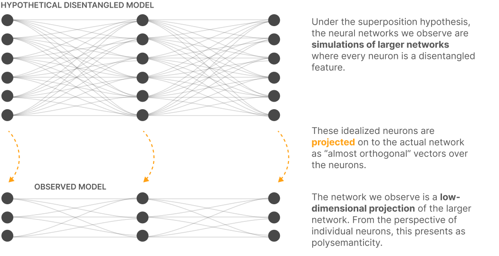
由此可得一个推论：我们应该预期特征方向构成一个过完备基。也就是说，我们的分解中方向 \(\mathbf{d}_i\) 的数量应多于神经元数量。此外，特征激活值应当是稀疏的，因为稀疏性正是这种噪声模拟得以实现的原因。这在数学上与经典的字典学习问题完全一致。
什么样的分解才是好的分解？¶
假设存在这样一个字典，使得每个数据点的 MLP 激活值都能被方程 1 中特征的稀疏加权和很好地近似。那么，当满足以下条件时，这一分解对解释神经网络是有用的：
- 我们能解释每个特征在什么条件下激活。也就是说，对于哪些数据点 \(j\) 会使特征激活（即 \(f_i(\mathbf{x}^j)\) 较大），我们有一份在多样化数据集上说得通的描述（数据集可以包括旨在检验假设的合成示例或分布外示例）。4
- 我们能解释每个特征的下游效应，即改变 \(f_i\) 的值对后续层的影响。这一解释应与 (1) 中的解释一致。
- 特征解释了 MLP 层功能的重要部分（以损失衡量；参见"我们的解释解释了模型的多少？"）。
满足这些标准的特征分解将使我们能够：
- 在具体示例上，确定一个特征对所在层输出以及下一层激活值的贡献。
- 监测网络中某个特定特征的激活（参见例如关于安全相关特征的猜想）。
- 通过改变某些特征的值，以可预测的方式改变网络的行为。在多层模型中，这可以表现为通过改变较早层中的特征激活值来可预测地影响某一层。
- 证明网络学到了数据的某些性质。
- 证明在某个具体示例上，网络在产生输出时使用了数据的某个给定性质。5
- 设计旨在激活给定特征、引出特定输出的输入。
当然，把模型分解成各个组件只是机制可解释性工作的开始！它让我们得以在模型的内部运作上站稳脚跟，从而能够真正着手解开电路，并建立对模型更大规模的理解。
为什么不采用架构层面的方法？¶
在 Toy Models of Superposition \cite{elhage2022superposition} 中，我们强调了解决叠加问题的几种不同方法。其中一种是直接在架构上做文章，让模型从一开始就不存在叠加。
起初，我们认为这或许可行，但会带来巨大的性能损失（即产生损失更大的模型）。即使这种性能损失大到无法在实际模型中使用，我们仍然觉得，成功造出单语义模型对研究会非常有用；而且在很多方面，这都像是下游分析中最"干净"的路径。
遗憾的是，在投入大量时间研究这一方法之后，我们最终得出结论：它在根本上行不通。
具体来说，我们曾多次尝试在训练中引入激活稀疏性，以训练出没有叠加的模型，甚至把激活训练成 1-hot 的形式。这确实消除了叠加，但并未产生可清晰解释的神经元！我们发现，即使在没有叠加的情况下，单个神经元也可能是多语义的。这是因为在许多情况下，模型把多个特征模糊地表示（放在一个多语义神经元里）所获得的损失，比清晰表示单个特征而忽略其他特征更低。
为了理解这一点，考虑一个只有一个神经元的玩具模型（toy model），它在一个包含四个互斥特征（A/B/C/D）的数据集上训练；每个特征都会对下一个词元（token）做出各自不同（且正确）的预测，标签方式也相同。再假设该神经元的输出是二值的：它要么激活，要么不激活。当它激活时，会输出一个向量，表示各个可能的下一个词元的概率。
我们可以计算该模型在几种情况下的交叉熵损失：
- 假设神经元只在特征 A 出现时激活，并在激活时正确预测词元 A。模型忽略所有其他特征：当特征 A 不出现时，它对词元 B/C/D 预测均匀分布。此时损失为 \(\frac{3}{4}\ln 3 \approx 0.8\)。
- 反过来，假设神经元在特征 A 和 B 上都会激活，并对 A、B 词元预测均匀分布。当特征 A 和 B 都不出现时，模型对 C、D 词元预测均匀分布。此时损失为 \(\ln 2 \approx 0.7\)。
由于情况（2）的损失低于情况（1），模型让唯一的神经元变得多语义反而能取得更好的性能——即便这里并不存在叠加。
这个例子起初可能显得无趣，因为它只涉及一个神经元；但它实际上指向了高度稀疏网络的一个普遍问题。如果把激活稀疏性推到极限，那么每次只有一个神经元会激活。这时我们可以考虑这个唯一的神经元以及它激活的各种情形。如前所述，这个神经元仍然可以是多语义的，而且这样对它有利。
基于上述推理和我们的实验结果，我们认为，用交叉熵损失训练的模型通常更倾向于以多语义方式表示更多特征，而不是以单语义方式表示更少的"真实特征"——即使在稀疏性约束使叠加无法形成的情况下也是如此。
用其他损失函数训练的模型则未必有这个问题。例如，在均方误差（MSE）损失下训练的模型，多语义表示与单语义表示可能取得相同的损失（例如 \cite{jermyn2022engineering}）；对于某些特征重要性曲线，它们甚至可能主动偏好单语义解 \cite{scherlis2022polysemanticity}。但语言模型并非用 MSE 训练，因此我们认为，不能靠改变架构来造出完全单语义的语言模型。
不过请注意，在训练后分解模型时，我们确实使用了 MSE 损失（在激活值与其字典表示之间），因此稀疏性可以抑制叠加在学到的字典中形成。（否则，我们可能就会"一路叠加到底"了。）
用稀疏自编码器寻找好的分解¶
长期以来有一个假说：世界上许多自然的潜在变量都是稀疏的（见 \cite{olshausen1997sparse} 中"Why Sparseness?"一节）。虽然我们对语言模型中存在的特征了解有限，但已有的例子（如 \cite{elhage2022solu}）都暗示这些变量高度稀疏。我们在 Toy Models of Superposition \cite{elhage2022superposition} 中的工作表明，大量稀疏特征可以用低维空间中的方向来表示。
因此，我们寻求一种既稀疏又过完备（overcomplete）的分解。这本质上就是稀疏字典学习\cite{elad2010sparse,olshausen1997sparse} 问题。（注意，由于我们只要求对激活值做稀疏分解，因此完全不会用到 \(\mathbf{d}_i\) 对模型输出的下游影响。这意味着我们可以在后面的章节中，把这些下游影响用作对所发现特征的一种验证。）
理解这一点很重要：把问题改成过完备的——乍听起来像是个无关紧要的改动——实际上使我们的设定与文献中那些寻求稀疏解纠缠（sparse disentanglement）的类似方法截然不同。这与字典学习为何如此不平凡密切相关；事实上，我们将会看到，这件事居然能够做到，本身就近乎奇迹。字典学习的核心是一个内层问题：给定特征方向 \(\mathbf{d}_i\)，为每个数据点 \(\mathbf{x}\) 计算特征激活值 \(f_i(\mathbf{x})\)。表面上看，这个问题似乎不可能：我们要从一个低维投影中确定一个高维向量。换句话说，我们试图对一个非常"长方形"的矩阵求逆。唯一让这成为可能的是：我们要找的是一个稀疏的高维向量！这就是著名且被广泛研究的压缩感知问题，其精确形式是 NP 困难的。高维稀疏结构可以存进低维空间，但要把它们恢复出来却很难。
尽管困难重重，字典学习仍有大量成熟的方法（例如 \cite{engan1999method,aharon2006k}）。这些方法通常涉及优化一个松弛后的问题，或进行贪心搜索。我们尝试过其中几种经典方法，但最终决定专注于字典学习的一个更简单的近似——稀疏自编码器（sparse autoencoder, SAE）（与 Sharkey 等人的工作类似 \cite{sharkey2022interim}）。这有两个原因。第一，稀疏自编码器可以轻松扩展到非常大的数据集，而我们认为，要刻画一个在大规模、多样化语料上训练的模型中的特征，这种扩展能力是必要的。6 第二，我们担心迭代式字典学习方法可能"过强"——它们能够从激活值中恢复出模型自身无法访问的特征。精确的压缩感知是 NP 困难的，神经网络显然不可能做到。相比之下，稀疏自编码器在架构上与语言模型中的 MLP 层非常相似，因此从叠加中恢复特征的能力也应该旗鼓相当。
稀疏自编码器的设置¶
这里简要概述我们稀疏自编码器的架构与训练，更详细的说明见"Basic Autoencoder Training"一节。我们的稀疏自编码器是这样一个模型：输入处有一个偏置，编码器是一个带偏置和 ReLU 的线性层，解码器则是另一个线性层加偏置。在玩具模型中，我们发现偏置项对自编码器的性能相当重要。7
我们用 Adam 优化器训练这个自编码器，以重建 transformer 模型的 MLP 激活值，损失为 MSE8 加 L1 惩罚，以鼓励稀疏性。
在训练自编码器的过程中，我们发现有几条原则相当重要。第一，规模确实重要。我们发现，用更多数据训练自编码器，会使特征在主观上更"锐利"、更可解释。最终，我们决定为自编码器使用 80 亿个训练数据点（见"Autoencoder Dataset"一节）。
第二，我们发现，在训练过程中，有些神经元会停止激活，即使遍历了大量数据点也是如此。我们发现，在训练期间对这些"死亡"神经元进行重采样能带来更好的结果——在自编码器隐藏层维度给定的情况下，模型可以表示更多特征。我们的重采样流程详见"Neuron Resampling"一节；简言之，我们会定期检查那些在相当多步内没有激活的神经元，并把死亡神经元的编码器权重重置为与自编码器当前表示不好的数据点相匹配。
对于希望应用这一方法的读者，我们还提供了一个附录 Advice for Training Sparse Autoencoders（《训练稀疏自编码器的建议》）。
如何判断自编码器是否有效？¶
在机器学习中，我们通常可以通过观察一个易于测量的量（如测试损失）来轻松判断某个方法是否有效。我们花了相当多的时间寻找一个能指导这项工作的类似指标，遗憾的是至今仍未找到令人满意的。
我们最初寻找的是基于信息的指标，希望在某种意义上可以说：最好的分解是使自编码器与数据的总信息量最小的那个。遗憾的是，这个总信息量通常与主观的特征可解释性或激活稀疏性并不相关。（有些运行的特征激活平均 L0 范数高达数百、重构误差却很低，其总信息量反而可能低于平均 L0 范数更小、重构误差更高的运行。）
因此，我们最终采用了几项额外指标的组合来指导研究：
- 人工检查：这些特征看起来可解释吗？
- 特征密度：我们发现，"活跃"特征的数量以及它们在多少比例的词元上激活，是极其有用的参考。（详见附录。）
- 重构损失：自编码器对 MLP 激活值的重构效果如何？我们的最终目标是解释 MLP 层的功能，因此 MSE 损失应当很低。
- 玩具模型：拥有我们知道真实答案（ground truth）、因而可以干净地评估自编码器性能的玩具模型，对我们早期的进展至关重要。
不过，解读或测量其中一些信号可能很困难。例如，我们曾在不同阶段以为自己看到了起初完全说不通的特征，但深入检查后又能理解了。同样，尽管我们为特征密度分布确定了一些期望性质（desiderata），但仍有很多我们尚未理解的东西，使这一指标无法提供清晰的进展信号。
我们认为，如果能找到更好的指标来评估在 transformer 上训练出的稀疏自编码器的字典学习解，将会非常有帮助。
我们研究的（单层）模型¶
我们选择研究一个单层 transformer 模型。我们把这个模型当作字典学习的试验台，它在这一角色上有三个关键优势：
- 单层模型较小，其"真实特征"可能比大模型更少，这意味着较小的字典学到的特征或许就能覆盖全部"真实特征"。小字典训练成本更低，可以快速进行超参数优化和实验。
- 我们可以很便宜地对单层 transformer 进行大幅过训练（overtrain）。我们假设，非常多的训练词元可能让模型在叠加中学到更干净的表示。
- 我们可以轻松分析特征对 logits（对数几率）输出的影响，因为这种影响近似是特征激活值的线性函数。9 这有助于佐证：我们发现的特征不仅反映了数据分布，而且确实体现了模型的功能。
我们训练了两个单层 transformer，超参数与数据集完全相同，唯一区别是初始化所用的随机种子。随后，我们在两个 transformer 上学习了多种不同大小的字典：每一对匹配的字典使用相同的超参数，但各自在对应 transformer 的不同词元激活值上训练。
我们把本文研究的主 transformer 称为"A"transformer。另一个 transformer（"B"）主要用于研究特征普遍性，例如我们可以比较从"A"和"B" transformer 学到的特征，看看它们有多相似。
特征的记号¶
在本文中，我们用"A/1/2357"这样的字符串来指代特征。第一部分"A"或"B"表示特征来自哪个模型。第二部分（如"A/1"中的"1"）表示字典学习运行。这些运行在学到的因子数量和所用的 L1 系数上有所不同。所有运行的列表见此处。值得注意的是，A/0…A/5 构成一个序列：L1 系数固定，字典大小递增。最后一部分（如"A/1/2357"中的"2357"）对应该次运行中的具体特征。
有时我们要指代 transformer 中的神经元，而不是稀疏自编码器学到的特征。这种情况下，我们使用"A/neurons/32"这样的记号。
探索特征的界面¶
我们提供了一个界面，用于探索所有字典学习运行中的全部特征。各次运行的可视化链接见此处。我们建议从 A/1 的界面开始——这也是我们讨论最多的一个。
这些界面为每个特征提供了丰富的信息，包括：它们何时激活的示例、激活时对 logits 有何影响、如果消融（ablate）该特征会如何影响各词元的概率，等等：
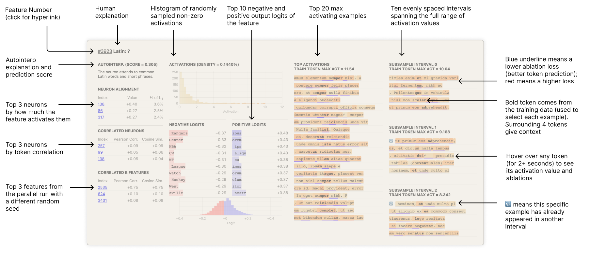
我们的界面还允许用户搜索特征：

此外，我们还提供了第二个界面，显示某个数据集样本上激活的全部特征。该界面目前适用于一组示例文本。

单个特征的详细研究¶
本文最重要的论断是：字典学习能够提取出比神经元单语义得多（monosemantic）的特征。在本节中，我们将针对少量在高度特定语境中激活的特征，详细演示这一论断。
我们研究的特征对以下内容作出响应：
- 阿拉伯文文本（如 "الكتاب المختصر في حساب الجبر والمقابلة"）
- DNA 序列（如 "CCTGGTACTGTACGAACGAACGAACGTAGCCTTGG"）
- base64 字符串（如 "https://www.youtube.com/watch?v=dQw4w9WgXcQ" 的末尾字符）
- 希伯来文文本（如 "בראשית ברא אלהים את השמים ואת הארץ"）
对于每个学得的特征，我们都尝试确立以下论断：
- 该特征对假定的语境具有高特异度（specificity）激活。（特征开启时，语境通常确实存在。）
- 该特征对假定的语境具有高灵敏度（sensitivity）激活。（语境存在时，特征通常开启。）
- 该特征引发恰当的下游行为。
- 该特征不对应任何神经元。
- 该特征是普遍的——对另一个模型应用字典学习，也会找到类似的特征。
为论证论断 1–3，我们为每种语境设计了计算代理指标（proxy）：一个数值评分，用于估计某个字符串（或词元）来自该特定语境的（对数）似然。上述语境的共同点是易于建模——它们都基于明确的 Unicode 字符集。我们将 DNA 序列建模为 [ATCG] 字符构成的随机字符串，将 base64 字符串建模为 [a-zA-Z0-9+/] 字符构成的随机序列。对于阿拉伯文与希伯来文特征，我们利用两种语言各自使用明确 Unicode 区块书写这一事实。于是，每个计算代理指标都是某字符串在假设语境下与在整个数据集经验分布下的对数似然比估计值。关于我们如何针对每个特征假设估计 \(\log(P(s|\text{上下文}) / P(s))\)，附录中"代理指标"一节给出了完整描述。
在本节中，我们主要研究每种语境下激活最强的学得特征。通常还有其他特征也在建模该语境；我们发现，主特征灵敏度中罕见的"缺口"，往往可以由另一个特征的激活来解释。我们将在"激活灵敏度"与"特征分裂"两节详细讨论这一现象。
我们煞费苦心地演示每个特征的特异度，因为我们认为，对于排除多语义性而言，特异度更为重要。多语义性通常表现为神经元对明显不相关的概念同时激活。10 如果我们的代理指标表明某特征只在某种相对罕见且特定的语境中激活，那么多语义性的典型形式就被排除了。
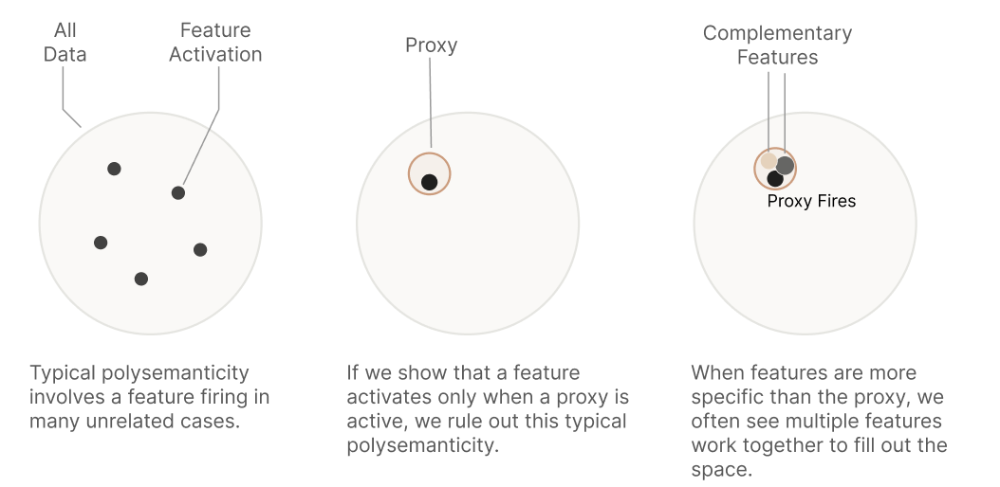
最后需要说明，本节中的特征是我们特意挑选出来、更易于分析的样本。为我们发现的大多数特征（如与奇幻游戏相关的文本）定义简单的计算代理指标会很困难，我们将在下一节用其他方式分析它们。
阿拉伯文特征¶
我们考察的第一个特征是阿拉伯文特征 A/1/3450。它对使用阿拉伯字母书写的文本——阿拉伯语、波斯语、乌尔都语（可能还有其他语言）——作出响应。这个特征相当特定，对阿拉伯文也相对灵敏；而如果从单个神经元的角度审视模型，它几乎完全不可见。
激活特异度¶
第一步是证明该特征几乎只在阿拉伯文文本上触发。我们使用估计的似然比 \(\log(P(s|\text{阿拉伯文}) / P(s))\) 为每个词元打一个"阿拉伯文"分数，并按该分数分解特征激活的直方图。阿拉伯文在我们的整体数据分布中相当罕见——仅占训练词元的 0.13%——却占该特征激活词元的 81%。这一比例随特征激活水平显著变化：特征勉强激活时约为 25%，激活值高于 5 时高达 98%。
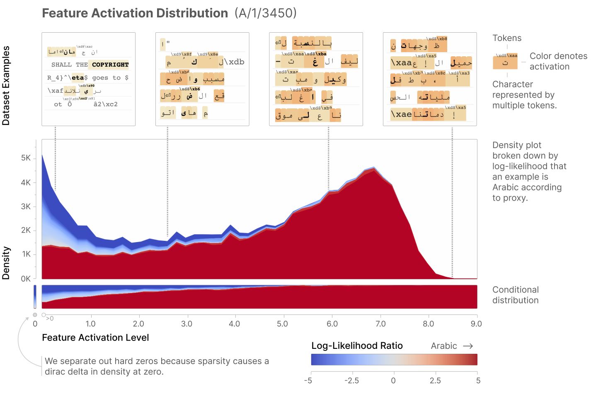
我们还给出展示不同激活水平的数据集示例。解读这些示例时要注意：阿拉伯文的 Unicode 字符常被切分为多个词元。例如，字符 ث（U+062B）被词元化为 \xd8 后接 \xab。11 发生这种情况时，A/1/3450 通常只在该 Unicode 字符的最后一个词元上触发。
激活谱的高段（激活值约 5 以上）显然以高特异度响应阿拉伯文。那么低段又该如何理解？我们提出三种假设：
- 代理指标不完善。由于其他 Unicode 区块中存在常见字符（如空白、标点），以及词元化在某些位置造成的异常行为，代理指标存在假阴性。12
- 模型可能不完善（但仍是校准的）。如果特征按其对某属性存在的"置信度"成比例激活，那么应当预期它们在弱激活时偶尔出错。认不出一段文本属于哪种语言看似荒谬，但这是一个非常弱的单层 transformer 模型，而且字符常被切成多个词元，进一步增加了难度。
- 自编码器可能不完善：如果自编码器的宽度小于模型实际使用的"真实特征"数量，未被恢复的特征可能表现为我们学得的许多特征上的低激活。
无论如何，大的特征激活对模型预测的影响更大，13 因此把它们的解释做对最为重要。评估低激活水平下假阳性影响的一个有用工具，是 Cammarata 等人 \cite{cammarata2020curve} 的"期望值图"。我们按激活水平加权，绘制特征激活的分布。该特征提供的大部分激活量来自阿拉伯文的数据集示例。

激活灵敏度¶
从上面的特征激活分布可以清楚地看到，A/1/3450 并非对阿拉伯文的所有词元都灵敏。在随机数据集示例中，它对五个"ال"前缀示例（转写为 "al-"，相当于英语定冠词 "the"）没有触发。然而恰恰在这些位置，另一个专用于阿拉伯文的特征 A/1/3134 触发了。还有若干其他特征也在阿拉伯文及相近文字上触发（如 A/1/1466、A/1/3134、A/1/3399），共同参与表征阿拉伯文。另一个例子涉及 Unicode 词元化：当阿拉伯字符被切分为多个词元时，我们这里分析的特征只在构成该字符的最后一个词元上激活，而 A/1/3399 在构成该字符的第一个词元上激活。为了看清这些特征如何协作，我们提供了一个替代可视化，展示一段阿拉伯文本上所有激活的特征。我们将在下文"现象学"一节进一步讨论这类交互。
尽管如此，在 4000 万词元的数据集上，我们仍发现该特征激活与阿拉伯文代理指标（以 0 为阈值）激活之间的皮尔逊相关系数（Pearson correlation）为 0.74。相关性是一个同时衡量灵敏度与特异度、且计入量级的联合指标，0.74 是相当可观的相关。
特征的下游效应¶
由于自编码器是在模型激活上训练的，理论上它学到的特征可能只表征训练数据本身的结构，而与网络的功能毫无关系。与此相反，我们将证明：学得的特征对模型输出具有可解释的因果效应，并且这些效应与特征的激活相符。请注意，这些下游效应并不是字典学习过程的输入——字典学习只能看到 MLP 层的激活。如果所得特征还介导了重要的下游行为效应，那么我们就有信心认为：该特征确实与 MLP 在网络中的功能角色相连，而不仅仅是底层数据的一种属性。
我们首先用线性近似刻画每个特征对模型 logits 的效应。按照 \cite{nelhage2021mathematical} 的路径展开方法计算 logit 权重：14 将每个特征方向乘以 MLP 输出权重、层归一化运算的近似（由去均值的投影和近似缩放项的对角矩阵组成）以及解嵌入矩阵（\(d_iW_{down}\pi L W_{unembed}\)）。由于 softmax 函数具有平移不变性，logit 权重没有绝对尺度；我们对其进行平移，使每个特征的 logit 权重中位数为零。
每个特征激活时，都会使某些输出词元更可能、某些输出词元更不可能。我们绘制该 logit 权重分布。15 在零处有一个大的主峰，最右侧还有一个小得多的次峰，对应的是该特征开启时似然增加最多的词元。这个次峰似乎对应阿拉伯字符，以及有助于表征阿拉伯文字符的词元（尤其是 \xd8 和 \xd9——在基本阿拉伯文 Unicode 区块中，它们通常是阿拉伯文 Unicode 字符 UTF-8 编码的前半部分）。

这表明，激活该特征会增加网络预测阿拉伯文字符词元的概率。16
为了在真实数据上可视化这些效应，我们对特征做因果消融（causal ablation）。对于给定的数据集示例，我们将上下文输入模型直到 MLP 层，把激活解码为特征，然后减去 A/1/3450 的激活（即在整段上下文上人为将其置零），再运行模型的其余部分。我们在可视化中用下划线展示消融该特征的效应：预测因该特征而受益的词元（消融使似然下降）用蓝色下划线标出，预测因该特征而受损的词元（消融使似然上升）用红色下划线标出。
在下方右侧的例子中可以看到，A/1/3450 在一段短上下文（橙色背景）的每个词元上都处于激活状态。消融它损害了所有阿拉伯文字词元的预测（紫色下划线），但改善了句号 . 的预测（橙色下划线）。图的其余部分展示来自两个不同特征激活水平区间的语境。（右侧示例（"子采样区间 5"）中间词元的特征激活约为左侧示例（"子采样区间 0"）中间词元的一半。）我们看到，在该完整区间内，该特征都在因果地帮助模型对阿拉伯文的预测，唯一因该特征而变不可能的词元是与其它文字共用的标点。特征越活跃，影响的幅度越大。
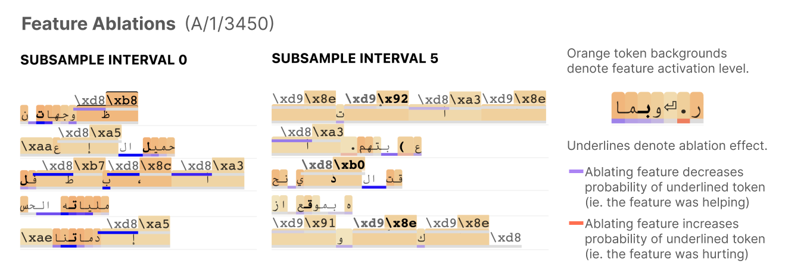
我们鼓励感兴趣的读者查看 A/1 的特征可视化，以回顾这一效应及其他效应。
我们还通过把特征激活"钉住"（pinned）在高值、再从模型采样，来验证该特征的下游效应与我们将其解读为阿拉伯文特征是一致的。具体做法是：从一个前缀 1,2,3,4,5,6,7,8,9,10 开始——模型对此有一个预期的续写（请记住这是一个非常弱的单层模型！）。然后我们把 A/1/3450 设为观测到的最大值，看采样如何变化：
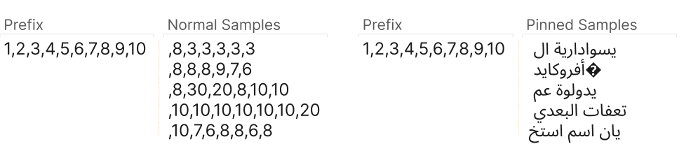
该特征不是神经元¶
这个特征看起来相当单语义，但有些模型的神经元也相对单语义，我们需要确认字典学习没有只是碰巧递给我们一个特别好的神经元。17 首先，当我们搜索前 20 个数据集示例中包含阿拉伯文的神经元时，只找到一个神经元，且其中只有一个阿拉伯文示例。（其余十八个示例是英文，一个是西里尔文。）
然后我们查看该特征在神经元基下的系数，发现按幅值最大的三个系数竟然都是负的（！），而且幅值至少为 0.1 的系数对应的神经元多达 27 个。
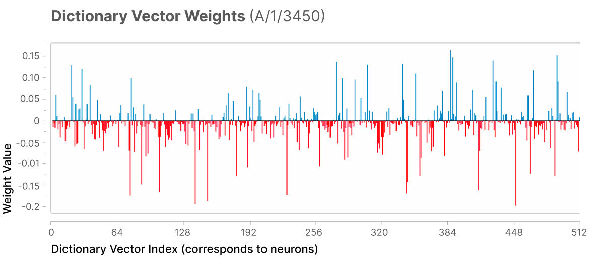
当然，这些神经元也可能玩着一场精巧的抵消游戏，使得某个特定神经元的主要激活被"锐化"。为检验这一点，我们找出在约 4000 万个数据集示例上与特征激活相关性最高的神经元。18 相关性最高的神经元（A/neurons/489）对多种不同的非英语语言混合响应。19 这一点可以从该神经元的激活分布可视化看出——数据集示例全部是其他语言，阿拉伯文只占一小条。

logit 权重分析也与"该神经元对多种语言混合响应"的解读一致。例如在下图中，许多最高的 logit 权重似乎包含俄语和韩语词元。细心的读者会注意到分布中一条对应罕见阿拉伯文词元的细细的红条。这些阿拉伯文词元的权重值总体略微偏正，但也有一些为负。
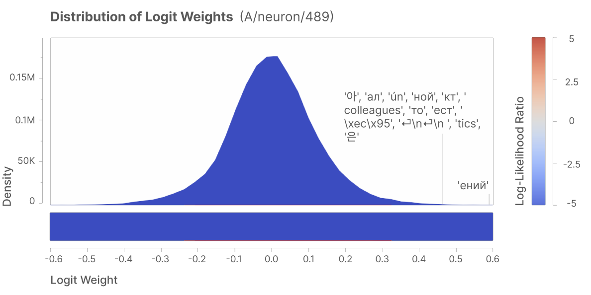
最后，散点图和相关分析表明，A/1/3450 与该神经元的相似性非零，但相当有限。20 尤其值得注意的是，logit 权重散点图的 y 轴（对应特征）能干净地把阿拉伯文词元的 logits 分离开，而 x 轴不能。更一般地说，注意 y 轴的边际分布明显表现出特异性，而 x 轴的边际分布没有。

我们的结论是：本文研究的特征并非简单地与单个神经元一一对应。如果只从神经元的角度分析模型，阿拉伯文字特征实际上是不可见的。
普遍性¶
接下来我们要问：A/1/3450 是否是一个普遍特征（universal feature），即它是否也会在其他模型中形成，并能被字典学习稳定地发现。如果是，就意味着我们发现的是一些更一般的东西——关于单层 transformer 如何学习数据集表示的规律。
我们在 B/1 中搜索类似的特征——B/1 是对一个在同一数据集上、但以不同随机种子训练的 transformer 进行的字典学习运行。我们按激活相关性最高来搜索特征 21，找到了 B/1/1334（corr=0.91），它与 A/1/3450 惊人地相似：

这个特征显然也对阿拉伯文字有响应。甚至可以说，它比我们原来的特征更好——在 0–1 区间内更加特异。logit 权重也讲述了类似的故事：
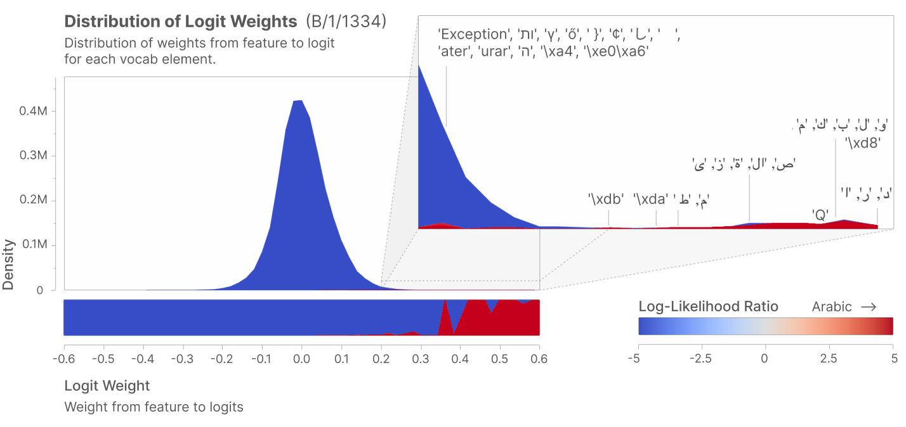
消融该特征的效果也与此一致（参见 B/1/1334 的可视化）。
为了更系统地分析 A 与 B 之间的相似性，我们考察了比较两者激活值或 logit 权重的散点图：

两者的激活值强相关（皮尔逊相关系数为 0.91），尤其是在主要的阿拉伯文字模态中。
logit 权重则展示了我们在 A/1 直方图中看到的双峰性的二维版本：阿拉伯文字词元的 logit 权重聚集在右上角。其相关性比激活值更弱，因为分布被中央一个相对不相关的模态主导。我们假设，这个中央模态对应着“权重干涉”（weight interference），而共享的离群模态才是重要观察——也就是说，模型理想情况下可能希望所有这些权重都为零，但由于与其他特征及其权重的叠加，这一点无法实现。
DNA 特征¶
接下来我们考察一个 DNA 特征 A/1/2937。它对由 A、T、C、G 组成的长串大写字符串（通常用来表示核苷酸序列）产生激活。我们基本沿用上文分析阿拉伯文字特征的思路，展示该特征的激活特异性和敏感性、合理的下游效应、与神经元的不对齐，以及跨模型的普遍性。主要差异在于：(1) A/1/2937 是唯一一个专门建模 DNA 上下文的特征；(2) 我们的代理（proxy）对 DNA 的敏感性不如该特征本身——它会漏掉含标点、空格和缺失碱基的字符串。
激活特异性和敏感性¶
我们先从“是否为 DNA 序列”的计算代理 \(\log(P(s|\text{DNA}) / P(s))\) 入手。由于词表中存在一些既可能出现在 DNA 中、也可能出现在其他上下文里的词元（例如 CAT），我们在评估该代理时总是考察至少两个词元组成的词组。对数概率呈现出相当明显的双峰分布，因此我们（根据其符号）对代理做了二值化。二值化后的代理与特征激活值的皮尔逊相关系数为 0.8。

虽然在特征的高激活区间（激活值高于 6.0 的 10 个随机数据集样本全部是 DNA 序列），该特征显得相当单语义，但在低激活区间存在大量蓝色，表明 DNA 代理没有触发。下面我们展示四个激活水平（包括特征关闭）下的随机样本网格，其中代理有的触发、有的不触发。
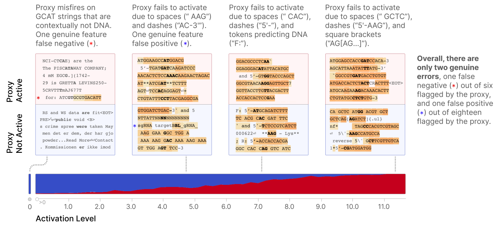
我们注意到，在特征与代理不一致的所有情形中，除两例之外，特征所指的确实都是 DNA 序列，只是不在我们代理严格的 ATCG 词汇表内。例如，三联体 TGG AGT 中的空格会使代理无法触发。特征还会在字符串 5'-TCT 中的 '- 上有效地触发，因为该前缀之后的内容应当是 DNA，尽管前缀本身并不是 DNA。（因果消融实验表明，关闭 DNA 特征会损害对后续字符串的预测。）因此我们认为 A/1/2937 对 DNA 相当敏感且特异。至于代理触发而特征未触发的那一例，其内容确实是 DNA 序列，只是特征从紧接着的下一个词元才开始触发。我们还观察到，DNA 特征可能不会在 DNA 序列开头的几个词元上触发，但到长 DNA 序列的末尾，它就成了唯一激活的特征。
特征的下游效应¶
以 logit 权重衡量，DNA 特征激活的下游效应是合理的：排名靠前的词元全部是 AGT、GCC 之类的核苷酸组合。

该特征并非神经元¶
按激活相关性衡量，与 A/1/2937 最相似的神经元是 A/neurons/67。DNA 上下文只占该神经元激活样本的极小一部分。而在我们特征向量中系数最高的神经元 A/neurons/227，其排名靠前的激活样本中也没有任何 DNA 序列。

普遍性¶
A/1/2937 在 B/1 运行中有一个相关特征 B/1/3680（corr=0.92）。二者排名靠前的 logit 权重一致，都是 DNA 词元（例如 AGT），并且与两者 logit 权重的主体部分分离，构成独立的模态（图中右侧圆圈标出）。

Base64 特征¶
接下来我们考察一个 base64 特征 A/1/2357。我们对这个特征尤其兴奋，因为我们在 SoLU 论文 \cite{elhage2022solu} 中发现过一个 base64 神经元，这表明 base64 可能相当普遍——甚至跨越了在不同数据集上训练、采用不同架构的模型。我们将 base64 字符串建模为 [a-zA-Z0-9+/] 字符的随机序列。按相应计算代理着色的激活分布，连同各激活水平下的随机数据集样本，显示该特征对 base64 相当特异。

这并非 base64 上下文中唯一激活的特征；在后面的小节中我们会讨论另外两个特征，其中一个会在 base64 上下文中的单个数字上触发（例如上图里 A/1/2357 未激活的 2、4、7 和 9），利用 BPE 分词器的特性做出更好的预测。
再看 logit 权重：它们有一个由高度 base64 特异的词元组成的第二模态。主模态似乎主要是干涉，但其右侧偏向 base64 中性或略偏 base64 的词元。（如果看下面的条件分布，我们会看到向 base64 特异词元更连续的过渡。）
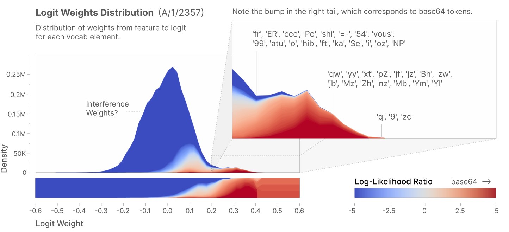
非 base64 词元与 base64 词元之间的过渡，比我们在阿拉伯文字例子中看到的更连续。这种差异很可能源于：一个词元在阿拉伯文字中是否比在其他文本中出现得更多，是一个相对二元的区分；而一个词元在 base64 中是否比在其他文本中出现得更多，则是连续变化的。例如，fr 既是法语（French）的常用缩写，也是一个 base64 词元，因此模型在提高 fr 的权重时保持谨慎是合理的——它可能已经因为法语中的使用而具有较高的先验。事实上，任何由英文字母组成的词元，都有一定的概率出现在 base64 字符串中。
计算代理与 A/1/2357 激活之间的皮尔逊相关系数仅为 0.38。我们认为这主要是因为代理过于宽泛。例如，十六进制字符串（由 [0-9A-F] 组成）也会触发该代理——它们与整体数据分布差异很大——但实际预测它们的却是另一个专属特征 A/1/3817。
普遍性¶
A/1/2357 在 B/1 运行中有一个相关特征 B/1/2165（corr=0.85）。它对 base64 字符串同样具有很高的激活特异性：
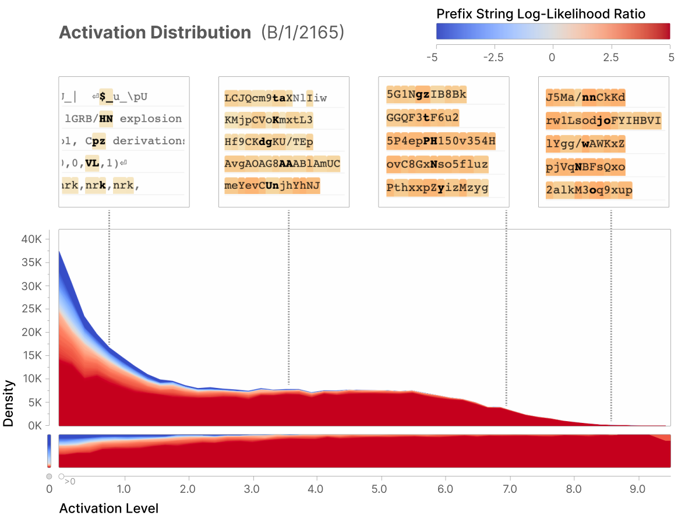
与 A/1/2357 一样，B/1/2165 的 logit 权重也有一个对应于 base64 词元的第二模态：

相关系数与散点图也一致表明它们是非常相似的特征：

需要注意的是，我们预计干涉模态与 base64 词元 logit 权重之间的重叠，源自前述 base64 词元在许多其他上下文中的使用。
该特征并非神经元¶
观察模型 A 中与该特征相关性最高的神经元 A/neurons/470（corr=0.18），我们发现：它虽然对 base64 字符串有明显响应，但也会对许多其他内容产生激活，包括代码、HTML 标签、URL 片段等等：

其 logit 权重显示，它在一定程度上提升 base64 词元，但更侧重于提高其他词元的权重，例如文件名的结尾部分。

激活相关性与 logit 相关性与此一致：这个神经元帮助表征了同一个特征，但主要还在做其他事情。

希伯来语特征¶
另一个有趣的例子是希伯来语特征 A/1/416。与阿拉伯语特征一样，基于 Unicode 区块在计算上很容易识别希伯来语文本。
A/1/416 在高激活区间具有很高的激活特异性。它也会对其他内容（尤其是使用 Unicode 文字的其他语言）产生微弱激活。强激活中也存在一些蓝色；这似乎主要出现在“常见字符”上，例如来自其他 Unicode 区块的空格或标点（阿拉伯语特征一节对类似问题有更多讨论）。

它的 logit 权重有一个显著的第二模态，对应于希伯来字符和相关的不完整 Unicode 字符。注意，\xd7 是基本希伯来语 Unicode 区块中大多数字符 UTF-8 编码的第一个词元。

希伯来文字代理与 A/1/416 的皮尔逊相关系数为 0.55。敏感性不足的部分原因可能在于一个互补特征 A/1/1016：它在 \xd7 上触发，并预测补全希伯来字符码点的字节。
该特征并非神经元¶
似乎不存在类似的神经元。模型 A 中相关性最高的神经元是 A/neurons/489（corr=0.1），其激活特异性和 logit 特异性都很低。请看下面的激活相关性与 logit 相关性图：

为了交叉验证这一点，我们还搜索了所有排名靠前的数据集样本中出现主要希伯来语 Unicode 区块的神经元。结果一个也没有找到。
普遍性¶
A/1/416 在 B/1 运行中有一个相关特征 B/1/1901（corr=0.92），具有显著的激活特异性：

和之前一样，logit 权重有一个第二模态：

激活相关性与 logit 权重相关性再次保持一致：

全局分析¶
如果上一节已经让你相信，至少有一部分特征真正可解释、反映了底层的模型机制，那么你自然会想问：在这些精挑细选的特征之外，这一结论在多大程度上依然成立？本节的主要任务是回答“其余的特征可解释性如何？”。我们将表明，无论是人类还是大语言模型，都认为我们的特征比神经元可解释得多，而且就绝对值而言也相当可解释。
人们还可能提出其他一些问题：我们的字典学习方法在多大程度上发现了理解 MLP 层所需的全部特征？从整体上看，MLP 层的机制有多少已经被解释清楚？我们尚不能完全满意地回答这些问题，但会在本节末尾提供一些初步的推测。
我们注意到，A/1 自编码器的 4,096 个学习特征中，有 168 个是“死亡”特征（在 1 亿个数据集样本上均不激活），另有 292 个是“超低密度”特征（在每 100 万个数据集样本中激活次数不足 1 次，并表现出其他非典型性质）。在后续分析中，我们排除了这两类特征。
典型特征的可解释性如何？¶
在本节中，我们用三种不同的方法来分析典型特征的可解释性，并将其与神经元进行比较：人工分析，以及两种形式的自动化可解释性分析。三种方法都发现，特征远比神经元可解释。
人工分析¶
目前，我们还没有任何比人类对可解释性的判断更值得信赖的指标。因此，我们请一位盲评标注员（作者之一 Adam Jermyn）根据特征和神经元的可解释程度为其打分。评分细则见附录，其评分依据包括：解释的置信度、激活值与解释的一致性、logit 输出权重与解释的一致性，以及特异性。
在开展这项评估时，我们想避免在先前工作（如 \cite{elhage2022solu}）中察觉到的一个弱点：评估过于聚焦于激活最强的数据集样本，而对激活谱的其余部分关注不足。许多多语义神经元如果只看激活最强的数据集样本，看起来像是单语义的；但只要考察激活谱中较低的部分，其多语义性就会暴露出来。为避免这一问题，我们在特征激活谱上均匀采样，22 并根据特征整体所暗示的解释，对每个区间分别打分。
遗憾的是，这种方法非常耗费人力，因此被评分的样本数量很少。我们总共对 162 个特征和神经元上的 412 个特征激活区间进行了评分。
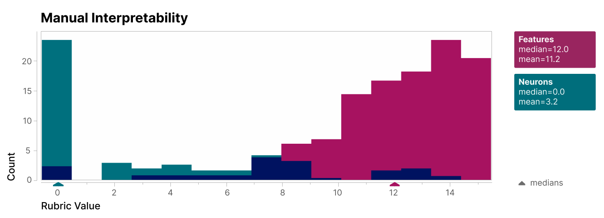
我们发现，特征的可解释性明显高于神经元。非常主观地说，当特征的评分值高于 8 时，我们认为它相当可解释。神经元的中位评分为 0，说明我们的标注员甚至无法对神经元可能表示什么形成任何假设！而特征区间的中位评分为 12，说明标注员形成了置信、具体且一致的假设，并且该假设在 logit 输出权重上说得通。
自动化可解释性——激活值¶
为了更大规模地分析特征，我们转向了自动化可解释性 \cite{bills2023language,hernandez2021natural}。参照 Bills 等人 \cite{bills2023language} 的做法，我们让一个大语言模型——Anthropic 的 Claude——利用特征被激活的 token 样本生成对特征的解释。随后，我们让模型用该解释去预测在未见过的 token 上的新激活值。23
与人工分析一样，我们使用覆盖全部激活区间的样本来评估单语义性。24 具体而言，对每个特征，我们计算预测激活值与真实激活值之间的 Spearman 相关系数，使用的数据集样本为 60 个、每个样本含九个 token，因此每个特征共有 540 个预测。虽然完全使用随机序列是原则上最严谨的打分方式，但为了让相关性更准确，我们让一半样本来自各个特征区间。更多信息见附录，其中包括如何使用重要性评分来精确抵消"提供特征会激活的 token"这一做法引入的偏差。
与人工分析的结果一致，Claude 解释和预测特征激活值的能力明显强于对神经元。25
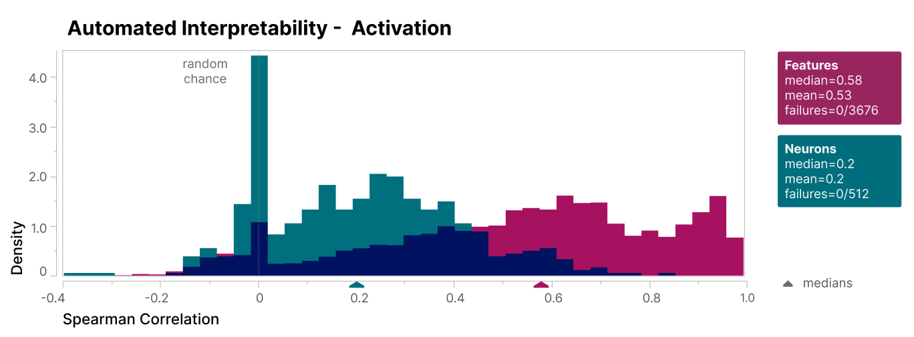
自动化可解释性——logit 权重¶
在之前对单个特征的分析中，我们发现查看 logits 是交叉验证特征可解释性的有力工具。自动化可解释性同样可以沿用这一思路。利用上一轮分析中生成的特征解释，我们让语言模型判断：某个未见过的 logit token 是否属于该特征应当预测为"接下来很可能出现"的 token。评分时将其与"正 logit 最高的 token 和其他随机 logit token 各占一半"的混合集对照计分。随机猜测的准确率是 50%，而模型在特征上的平均准确率达到 74%，相比之下神经元仅为 58%。这里的失败案例指 Claude 未按评分所需的格式作答的情况。
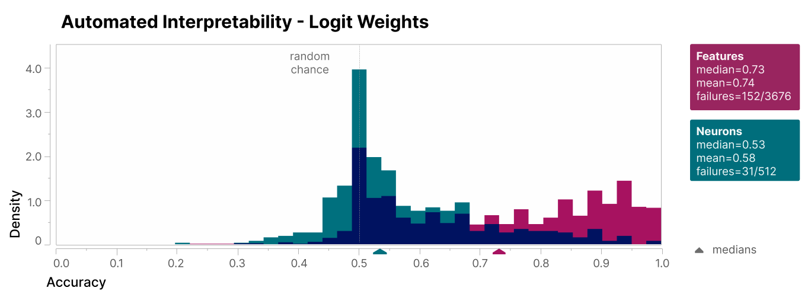
激活区间分析¶
除了把特征作为一个整体来研究，在人工分析中我们还可以借助特征区间放大观察特征激活谱的各个部分。与之前一样，特征区间是激活值最接近最大激活值某个等距分数的样本集合。因此，我们问的不是某个特征看起来是否可解释，而是某一段激活范围是否与特征完整激活谱所暗示的整体解释一致。这让我们得以考察可解释性如何随特征激活强度而变化。
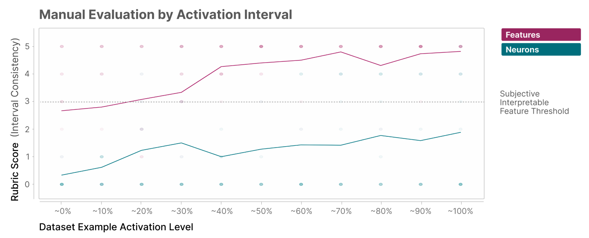
激活较高的特征区间与我们的解释一致性更高，激活较低的区间则不然。具体来说：
- 许多特征在整个激活谱上表现出一致的激活模式。
- 有些特征在激活谱最高的约 60% 范围内表现一致，但随着我们考察越来越小的激活值，其可解释性迅速下降。
这可能表明我们的特征并不完全正确。例如，如果某个特征与我们真正想学到的特征之间存在一个微小夹角，那么在低激活区间就会表现为不一致的行为。
注意事项¶
我们的人工与自动化可解释性实验存在几点注意事项：
- 特征激活偏向较低的区间。大多数特征激活值都非常小，因此落在较低（也更不可解释）的特征区间。话虽如此，正如我们在详细分析中发现的，特征的大部分效应26来自其较高的激活值，而这些高激活是相当可解释的。
- 被评估的特征是从全部特征集合中均匀采样的，而可解释性可能与重要性相关。可以想象去评估那些激活幅度最大、或消融后影响最大的特征。我们的感觉是，它们会比我们随机采样的特征更可解释。当然也可以设想一种情况：某种意义上最重要的特征反而系统地更不可解释——不过查看最活跃的特征表明情况恰恰相反。
基于我们在可视化中对大量特征的检视，我们认为这些注意事项不会影响实验结果。我们鼓励感兴趣的读者打开 A/1 及对应神经元的可视化页面。你可以按"random"排序获得无偏样本，自行重做上述实验；也可以按最大激活（max activation）、最大密度（max density）等重要性指标对特征排序，检验最后一条注意事项。
我们的解释能解释模型的多少？¶
接下来我们转向最没有把握回答的问题——这些看似可解释的特征，在多大程度上代表了 MLP 的"全貌"？这个问题可以有多种问法：MLP 的损失贡献中，我们已经让多大一部分变得可解释？我们能理解多少模型行为？如果确实存在某个离散的"真实特征"集合，我们又发现了其中多大比例？
部分回答这一问题的一种方式是：我们的特征解释了多少损失。对于 A/1——本文着墨最多的运行——我们的特征恢复了 MLP 层提供的对数似然损失减少量的 79%。也就是说，用自编码器的输出替换 MLP 激活所带来的额外损失，仅为对 MLP 做零消融所造成损失的 21%。这一损失代价可以通过使用更多特征或更低的 L1 系数来降低。一个极端的例子是 A/5（n_learned_sparse=131,072，l1_coefficient=0.004），它恢复了 94.5% 的对数似然损失。
对这些数字应持相当大的保留态度。最大的问题在于，用损失占比来框定这个问题可能具有误导性——我们预期特征存在长尾：随着已解释损失占比的增加，解释残差所需的特征会越来越多。另一个问题是，我们不认为自己的特征完全单语义（一些多语义性可能隐藏在低激活中），也并非所有特征都必然干净可解释。尽管如此，我们之前对单个特征的分析（如阿拉伯语特征、base64 特征等）确实表明，模型以可解释的方式使用特定的可解释特征——消融它们会以恰当的方式降低相应概率，人为激活它们则会产生相应的行为。这似乎印证了：尽管存在上述注意事项，恢复的 79% 损失衡量的是真实存在的东西。
原则上，可以用自动化可解释性在这里做出更好的度量：用从解释中预测出的激活值替换真实激活值。（我们相信社区中已经有人最近在考虑这一点！）这种做法的朴素版本计算开销相当大，27 尽管可能存在近似方案。更一般地说，这里的可能性空间要广阔得多。或许存在一种以单个特征为单位的、有原则的分析方式——虽然存在重大的概念性问题，但人们或许能够把早先的"特征重要性"概念形式化为某个特征对损失做出的独立贡献，进而分析该特定特征能被恢复多少。
总体而言，我们认为"衡量基于特征的解释在多大程度上解释了模型"是一个重要的开放问题，无论在定义度量指标还是寻找高效计算方法上，都需要大量工作。
特征揭示的是模型还是数据？¶
模型的激活反映了两件事：数据集的分布，以及该分布被模型变换的方式。因此，对激活做字典学习会混合数据属性与模型属性，所学特征的有趣性质可能来自其中任何一个来源，也可能同时来自两者。数据中的相关性在模型前半部分（直到 MLP）作用之后仍可能留存；理论上，我们看到的那些有趣特征可能只是数据集相关性被投影到另一个空间后产生的伪影。不过，模型后半部分（MLP 下投影与解嵌入）对这些特征的使用并不参与字典学习，因此这些特征下游效应的可解释性必然来自模型本身。
为了评估数据集相关性对特征激活可解释性的影响，我们在单层模型的随机权重版本上运行字典学习。28 所得特征见此处，其中包含许多单 token 特征（如"span"、"file"、"."和"nature"），也有一些特征会在各种大致可辨认语境的不同任意子集上激活（如 LaTeX 或代码）。然而，我们无法为非单 token 特征构造出说得通的解释，在此也邀请读者亲自查看随机权重模型的特征可视化来确认这一点。我们由此得出结论：模型的学习过程在其激活中创造的结构，比数据集本身的 token 分布更为丰富。
为了评估特征下游效应的可解释性，我们再次使用上一节的三种主要方法：
- 检视 logit 权重。logit 权重表示每个特征对 logits 的影响；正如我们早先对单个特征的考察所展示的，对于 base64、阿拉伯语和希伯来语特征，logit 权重与特征激活是一致的。我们邀请读者在可视化中检视所有特征的 logit 权重。
- 特征消融。我们将某个特征的值在整个上下文中置零，并记录每个 token 上损失的变化。可视化中所有特征都提供消融。
- 固定特征采样。我们人为将特征值固定在一个较高的数值上，然后从模型中采样。我们发现生成文本与特征的解释相符。
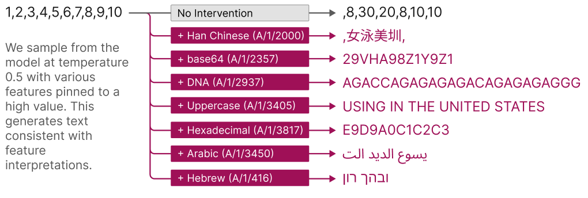
在所有上述指标上，特征激活与其下游效应之间的一致性，为"所学特征确实被模型使用"提供了证据。
现象学¶
归根结底，我们工作的目标是理解神经网络。把模型分解为特征只是达成这一目标的手段，人们完全有理由怀疑它是否真的在推进我们的总体目标。因此，在本节中，我们将把注意力转向这些特征能教给我们关于神经网络的哪些道理。（我们习惯把这种"利用理论理解来推究模型性质"的工作称为现象学（phenomenology），这是类比物理学中的现象学以及 2019 年 ICML 关于深度学习现象的研讨会而起的名字。）
一种做法是详细讨论我们找到的特征（类似于 \cite{olah2020early,goh2021multimodal}），但我们认为，要感受我们所发现的特征，最好的方式就是直接浏览界面——我们随论文一同发布了这套特征探索工具。我们找到的特征千差万别，任何简短的总结都无法涵盖其广度。因此，我们主要聚焦于一些更抽象的性质和我们注意到的模式。这些抽象性质能够为"这些是真实特征吗？""单层模型中到底发生了什么？"这类问题提供启发——尽管远不能回答它们。
我们先讨论关于特征的一些基本母题与观察，然后比较我们找到的特征与其他字典学习运行、其他模型中的特征。这将表明：特征是普遍的，且字典学习可以被理解为一种特征分裂过程，它反映了叠加几何中某些深刻的东西。最后，我们将探讨特征如何连接成"有限状态自动机"式的系统，以实现更复杂的行为。
特征母题¶
我们在模型中找到了哪些类型的特征？
一个突出的主题是上下文特征（context features，如 DNA、base64）与上下文中的词元特征（token-in-context features，例如数学文本中的 the – A/0/341、HTML 中的 < – A/0/20）的普遍存在。29 先前的工作已经观察到这类特征（上下文特征参见 \cite{elhage2022solu,gurnee2023finding,bills2023language}；上下文中的词元特征参见 \cite{elhage2022solu,smith2023strong}；更早的观察参见 \cite{reif2019visualizing}），但上下文中的词元特征数量之多令我们感到震惊。例如，在 A/4 中，有超过一百个特征主要对处于不同上下文中的词元 “the” 作出响应。30 这些特征之间常常通过特征分裂相互关联（下一节将讨论）：在学到的特征较少的字典中，它们呈现为纯粹的上下文特征或词元特征，而随着学到的特征增多，它们又分裂为上下文中的词元特征。
另一个有趣的模式是所谓“三元语法”（trigram）特征在模型中的实现方式，例如一个预测 COVID-19 中 19 的特征（A/2/12310）。这类特征原则上可以仅靠注意力实现，但实际上模型也动用了 MLP 层。我们还看到一些似乎对特定的、较长的词元序列作出响应的特征。这些特征尤其引人注目，因为它们可能实现了类似“记忆”（memorization）的行为——我们稍后会进一步讨论。
最后，值得指出的是，我们在单层模型中发现的所有特征，除了扮演“输入特征”（input features）的角色之外，都可以被理解为“动作特征”（action features）。例如，一个 base64 特征既可以理解为对 base64 字符串作出响应而激活，也可以理解为起到提高 base64 字符串概率的作用。“动作”视角可以澄清部分上下文中的词元特征：特征 A/0/341 预测数学文本中的名词短语，提高 denominator 这类名词和 latter 这类形容词的权重。因此，尽管它在 the 上激活最强，它也会在 special 和 this 这类后面同样跟着名词短语的形容词上激活。特征的这种双重解释可以通过浏览我们的交互界面来探索。此前已有几篇论文探讨过将神经元解释为动作（例如 \cite{geva2022transformer}），而单层模型尤其适合这种解释，因为这是理解最后一个 MLP 层的一种特别有原则的方式——单层模型中唯一的 MLP 层正是最后一层。
特征分裂¶
我们所发现的特征有一个引人注目之处：它们成簇出现。例如，我们前面观察到多个 base64 特征、多个阿拉伯文字特征，等等。随着学到的稀疏特征总数增加，我们会看到更多这样的特征——我们把这一现象称为特征分裂（feature splitting）。当我们从 A/0 的 512 个特征增加到 A/1 的 4,096 个特征，再到 A/2 的 16,384 个特征时，专门针对 base64 上下文的特征数量从 1 个变成 3 个，再变成更多。
为了理解字典元素的几何结构与这些定性簇之间的对应关系，我们对 A/0、A/1 和 A/2 合并后的特征方向集合做了二维 UMAP 降维。

我们看到与 base64 和阿拉伯文字特征对应的簇，以及来自特定上下文的许多其他紧密簇，还有其他特征的各种有趣的几何结构。这证实了定性层面的簇确实反映在字典的几何结构中：相似特征之间的字典向量夹角很小。
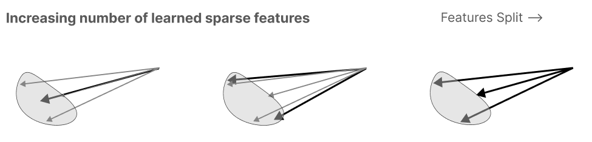
我们猜想，若给予字典学习无限大的字典，它将返回某个理想化的特征集合。这些“真实特征”常常聚集成相似特征的集合，而模型将它们置于非常紧密的叠加之中。由于特征数量受限，字典学习返回的特征覆盖了与理想化特征大致相同的领地，代价是特异性稍差。
在这种图景下，概念上相似的特征其字典向量之所以相似，是因为它们很可能在模型中产生相似的行为，因此应当在神经元激活值中造成相似的影响。例如，一个在句号上激发的特征，自然地会预测以空格开头、后接大写字母的词元。如果存在多个在句号上激发的特征——也许是在略有不同的上下文中的句号上激发——它们可能都会预测以空格开头的词元，而这些预测很可能涉及产生相似的神经元激活值。特征之间高度相关、且具有相似“输出动作”（output actions），这两者结合在一起，使得真实模型中的叠加比我们在之前的玩具模型工作 \cite{elhage2022superposition} 中观察到的更稠密、也更有结构。31
如果这幅图景是正确的，那么它将因多种原因而意义重大。它表明，为字典学习确定“正确的特征数量”并不像乍看起来那么重要。它还表明，特征较少的字典学习可以提供模型特征的“摘要”，这在研究大型模型时可能非常重要。此外，它还能解释我们在字典学习过程中观察到的一些比较奇怪的特征：这些特征要么是“坍缩”（collapsed）的特征——若进一步分裂它们便会变得合理（见“Bug”1：单词元特征），要么是高度特化的“分裂”（split）特征——若仔细分析，它们其实也说得通（见“Bug”2：单一上下文对应多个特征）。最后，它还表明，我们关于玩具模型中叠加的基础理论缺失了问题的一个重要维度——没有充分研究高度相关、且“共享动作”（action sharing）的特征。
示例：数学与物理特征¶
在这个示例中，我们最粗糙的一次运行（学到 512 个稀疏特征）包含三个描述不同技术性语境中词元的特征。利用特征激活值之间的掩码余弦相似度32，我们能够识别出这些特征在学到更多稀疏特征的运行中是如何细化与分裂的。
我们看到，更精细的运行揭示了技术写作中概念之间更细粒度的区分，并能区分冠词 the 和 a——它们后面跟的名词短语集合略有不同。我们还看到，这种细化的结构比树更复杂：我们在某一层级发现的特征，既可能分裂也可能合并，从而在下一层级形成细化后的特征。不过总的来说，学到的稀疏特征越多的运行，其特征往往比特征较少的运行更特化。
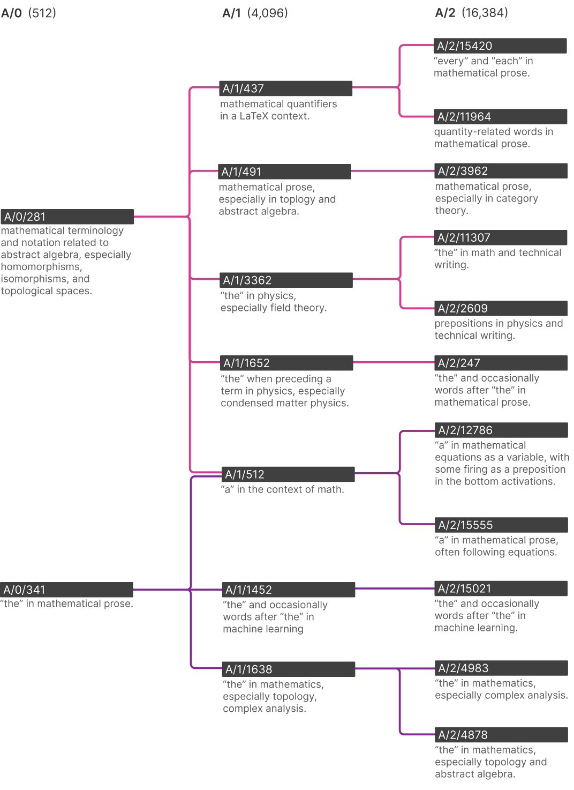
值得注意的是，这些更精确的特征既反映模型预测的差异，也反映激活值的差异。通用的“数学文本中的 the”特征（A/0/341）其排名靠前的正 logits（对数几率）对应高度通用的数学词元（例如支持 the denominator、the remainder、the theorem），而分裂得更细的机器学习版本（A/2/15021）则做出更加具体的主题预测（例如 the dataset、the classifier）。同样，我们的抽象代数与拓扑学特征（A/2/4878）支持 the quotient 和 the subgroup，引力与场论特征（A/2/2609）则支持 the gauge、the Lagrangian 和 the spacetime。
看起来像 Bug 的特征¶
“Bug” 1：单词元特征
当我们限制字典学习只使用很少的稀疏特征时，涌现出的特征有时看起来相当奇怪。具体来说，存在大量高激活幅度的特征，它们各自只会在单个词元上激发，而且似乎在该词元的每一次出现时都会激发。这类特征之所以奇怪，是因为模型完全可以靠学习不同的二元语法（bigram）统计来实现同样的效果，因此没有理由为它们投入 MLP 容量。类似的特征最近也在 Smith 的一份报告中被观察到 \cite{smith2023strong}。
我们认为特征分裂可以解释这一现象：例如，模型并没有学到单个在字母 P 上激发的特征33，而是学到了许多特征，它们在不同上下文中于 P 上激发34，对神经元激活值和输出 logits 的影响也相应不同（见下文）。在足够粗糙的层面上，字典学习无法区分这些特征；但当我们允许它使用更多的稀疏特征时，这些特征会分裂、细化，变成一群在不同上下文中激发的五花八门的 P 特征。
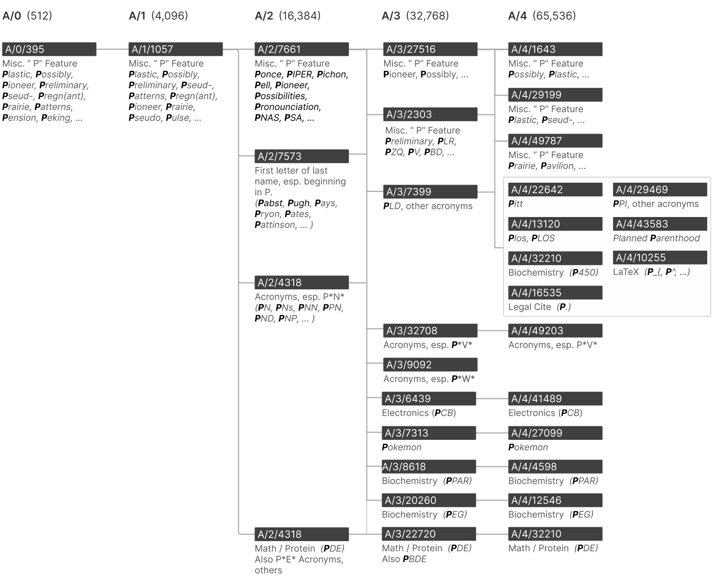
“Bug” 2：单一上下文对应多个特征
我们还观察到了相反的情况：多个特征似乎覆盖了大致相同的概念或上下文。例如，A/1 中有三个特征会在 base64 字符串（的某些子集）上激发，并预测 zf、mF、Gp 这类合理的 base64 词元。其中一个特征我们前面详细讨论过，当时我们展示了它会在 base64 字符串上激发。但我们也观察到，它并非对所有 base64 字符串都激发——这是为什么？另外两个特征又在做什么？为什么会有三个？
在 A/0（512 个特征）中，情况很简单：只有一个与 base64 相关的特征 A/0/45，它似乎在 base64 编码字符串的所有词元上都会激活。但在 A/1 中，该特征分裂成了三个不同的特征，它们的激活值似乎共同覆盖了 A/0/45 的激活值：
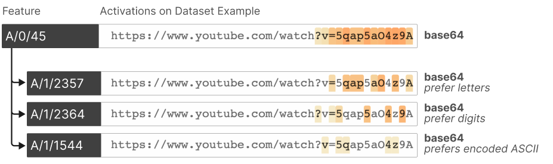
其中两个特征看起来相对直白：A/1/2357 似乎优先在 base64 中的字母上激发，而 A/1/2364 似乎优先在数字上激发。
比较这些特征的 logit 权重可以发现，它们预测的词元集合大体相同，但有一个显著差异：在数字上激发的那一个特征，其预测数字的 logit 权重低得多。换句话说，如果当前词元由数字组成，模型就会预测下一个词元是非数字的 base64 词元。
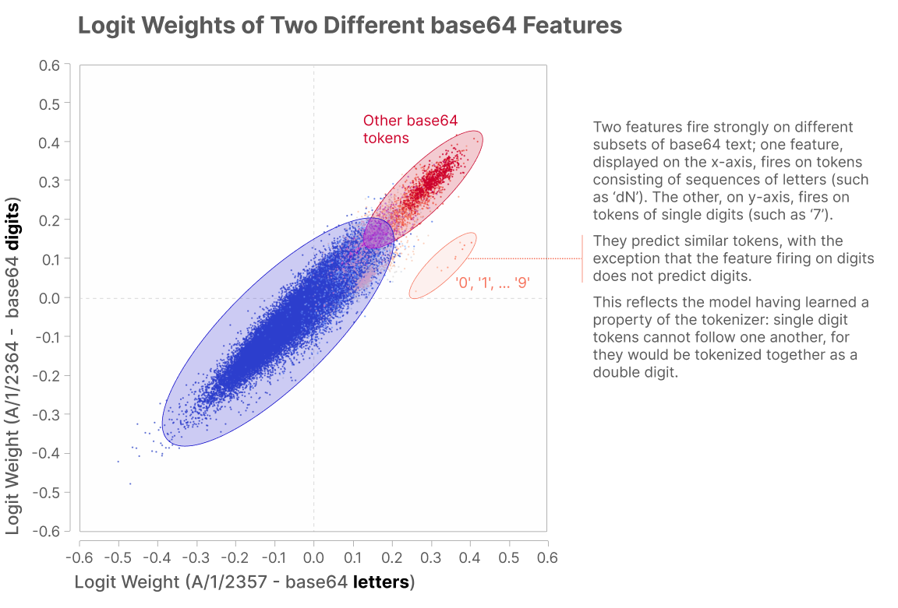
我们认为这很可能是词元化（tokenization）的假象！如果单个数字后面还跟着另一个数字，它们会被一起词元化为单个词元；[Bq][8][9][mp] 永远不会出现，因为它会被词元化为 [Bq][89][mp]。因此，即使在随机的 base64 字符串中，“当前词元是单个数字”这一事实也提供了关于下一个词元的信息。
那么第三个特征 A/1/1544 呢？乍一看，它何时激发并没有明显的规律。但如果我们更仔细地观察，会发现它似乎对编码了 ASCII 文本的 base64 字符串作出响应。35 查看每个特征排名最高的数据集示例，我们会发现 A/1/1544 的示例包含可解码为 ASCII 的子串，而 A/1/2357 或 A/1/2364 激活最高的示例中没有一个如此：36
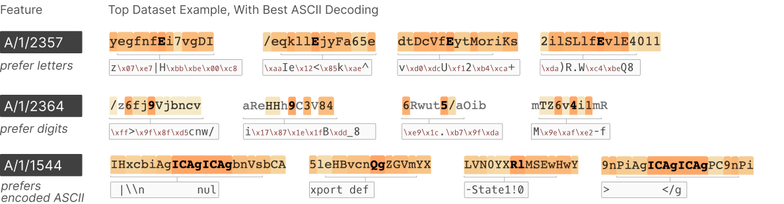
这种研究模式——先看较粗糙的特征集合以理解模型行为的类别，再看更精细的特征集合以探究该行为的微妙之处——或许会很好地适用于特征集合预计会非常庞大的更大的模型。
同样值得注意的是，字典学习特征在这里居然能让我们感到意外。许多可解释性方法是自上而下的，寻找我们预期的东西。但谁能想到，模型不仅有一个 base64 特征，还能区分不同种类的 base64 字符串？这让我们想起高低频检测器 \cite{schubert2021highlow} 或多模态神经元 \cite{goh2021multimodal} 这类案例——正是在视觉模型中，人们发现了这些令人惊讶、出乎意料的特征。
普遍性¶
关于特征最大的“元问题”之一，是它们是否具有普遍性 \cite{li2015convergent,olah2020zoom}——不同的模型是否会形成相同的特征？这个问题之所以普遍重要，是因为它关系到研究某个模型所得的来之不易的经验能否推广到其他模型。而在试图从叠加中提取特征的语境下，它尤其重要：普遍性可以为“我们提取的特征是‘真实的’，或至少是可复现的”提供有力证据。37
前面我们看到，我们做过详细分析的所有特征（例如阿拉伯文字特征、base64 特征）在两个单层模型之间都是普遍的。但这对我们模型中的典型特征是否同样成立？它的成立范围又有多广——我们是否只有在相同数据集上训练相同架构的模型时才能观察到相同的特征，还是说这些特征也出现在差异更大的模型中？本节将尝试回答这两个问题：第一小节定量分析我们所研究的两个单层模型之间普遍性的广泛程度；第二小节则把我们发现的特征与文献中报道的其他特征进行比较，以寻找一种更强的普遍性形式。
我们观察到这两种类型的普遍性都很显著。38 从高层看，这说得通：如果一个特征对某个模型表示数据集是有用的，那么它很可能对其他模型也有用；而如果两个模型都表示同一个特征，那么一个好的字典学习算法就应该能找到它。
比较两个单层 transformer 之间的特征¶
要比较不同模型的特征，我们需要与模型无关的特征表示方式。
一种自然的做法是把特征看作一个给数据点赋值的函数；如果两个特征在一组多样的数据上取值相似，那么在这个意义上它们就是相似的。这一总体思路已被多篇前期工作探索过（例如 \cite{erhan2010does,li2015convergent,olah2015visualizing,raghu2017svcca}）。在实践中，可以把特征表示为一个向量来近似实现，向量的各个下标对应一组固定的数据点。我们将这些向量之间的相关性称为特征之间的激活相似性（activation similarity）。
另一种自然的做法是从下游效应来考察特征：如果两个特征的激活以相似的方式改变模型的预测，那么在这个意义上它们就是相似的。在我们的一层模型中，logit 权重是对这一点的一个简单近似。该近似把每个特征表示为一个向量，向量的下标对应词表中的词元。我们将这些向量之间的相关性称为特征之间的 logit 权重相似性（logit weight similarity）。
这两种相似性概念，分别对应我们前面分析单个特征时使用的两张散点图中各点的相关性。下面我们重新展示了阿拉伯文字特征的这两张图：
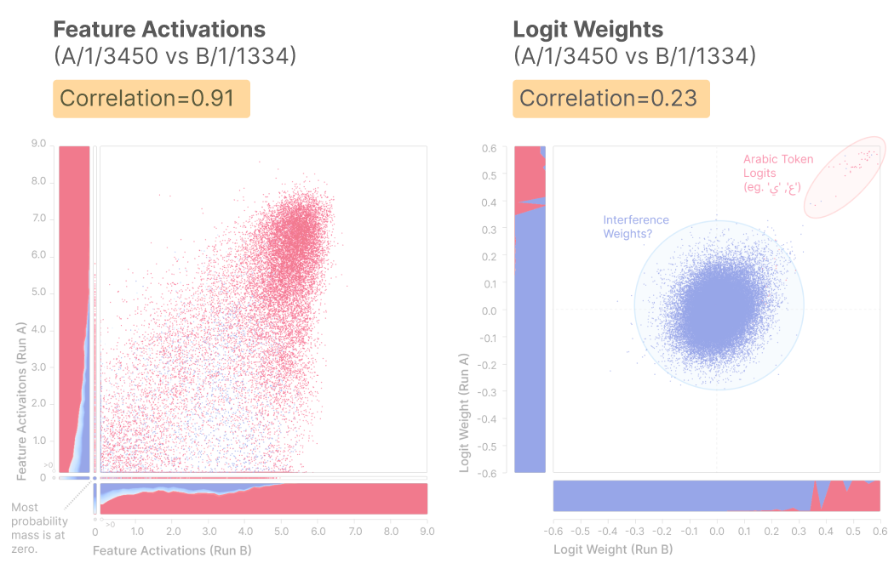
对于运行 A/1 中的每个特征，我们在运行 B/1 中找出与其激活相似性最近的特征。B/1 是另一次字典学习运行，它在一个不同 transformer 的不同激活上训练：该 transformer 使用不同的随机种子，但其余超参数完全相同。我们发现许多特征在两个模型之间高度相似——A/1 中的特征与 B/1 中最相似特征的中位激活相关性为 0.72。（我们对两个 transformer 的神经元做了同样的分析，发现相似性明显更低，中位激活相关性为 0.46。）两个模型之间激活相关性较低的特征，可能对应着所学字典中不同的“特征分裂”，或基础模型学到的不同“真实特征”。
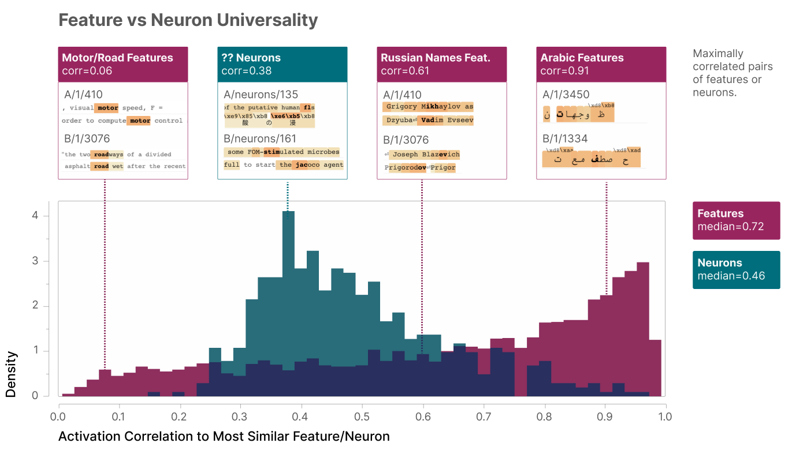
一个自然的后续问题是：在相同词元上触发的特征，是否也具有相同的 logit 效应？也就是说，激活相似性与 logit 权重相似性的吻合程度如何？
对于上面的阿拉伯文字特征，两者之间存在明显差距：两个模型的特征都对特征效应中的“重要词元”（即阿拉伯文字词元）赋予了更高的权重，但还有一大片效应较小的词元，看起来几乎就是各向同性噪声，导致 logit 权重相关性仅为 0.23，远低于 0.91 的激活相关性。
在下面的散点图中，我们发现这类分歧相当普遍。

这种分歧最极端的例子是特征 A/1/3949 与 B/1/3321：它们的激活相关性高达 0.98，但 logit 权重相关性为负。这些特征在 pone（偶尔也在 pgen 和 pcbi）上触发——它们是期刊名 PLOSOne 在引文中的缩写，例如 @pone.0082392——并预测紧随其后的 .。39
放大 logit 权重散点图（上图中的内嵌小图）可以看到，两个模型中只有 . 词元具有较高的 logit 权重，其余所有词元都落在 logit 权重分布的“干涉”部分。事实上，对于那些本来就不可信的词元——它们已被直接路径、注意力层或 MLP 的其他特征所抑制——模型可能根本不在意该特征对它们产生了什么影响。
我们想要衡量的更接近“特征对词元概率的实际影响”。要做到这一点，一种办法是为每个特征在每个数据点上计算一个消融效应向量；如果一对特征的消融在相同的词元上损害了模型的预测，那么它们必然一直在预测同样的东西。遗憾的是，这在计算上相当昂贵。作为替代，我们把特征的激活向量乘以数据集中经验上紧随其后的词元的 logit 权重，得到一个归因向量（attribution vector）。40 这些向量之间的相关性给出了一种归因相似性（attribution similarity），它同时结合了特征的活跃程度及其对损失的影响。我们发现归因相似性与激活相似性高度相关，这意味着在模型之间共同激活的特征，确实有助于预测相同的词元。
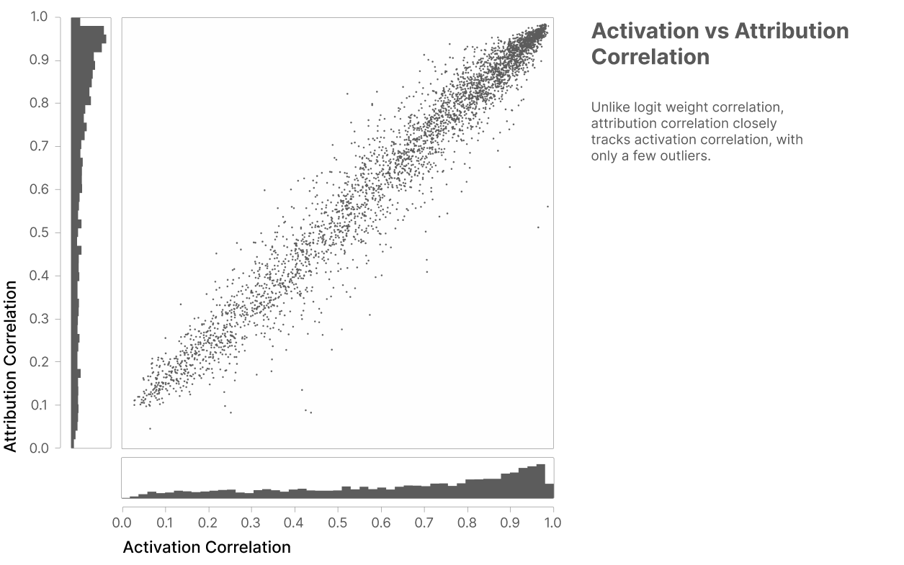
有鉴于此，我们认为本文通篇使用的激活相关性，在我们的一层模型语境下，实际上是衡量这两种普遍性概念的良好代理指标。
与文献中的特征比较¶
到目前为止，我们已经确认许多特征在有限意义上是普遍的：在一个 transformer 中发现的特征，也能在用不同随机种子训练的另一版本中找到。但第二个模型与前者架构完全相同，且在同一数据上训练。这是人们所能期望的最基本的普遍性形式。尽管如此，我们相信所发现的许多特征在更深层的意义上是普遍的，因为文献中此前已经报道过非常相似的特征。
最先引起我们注意的对比是：许多特征与我们在单层 SoLU 模型中找到的神经元颇为相似。SoLU 模型使用了一种旨在让神经元更加单语义的激活函数 \cite{elhage2022solu}。具体来说，我们在 SoLU 研究中观察到了 base64 神经元、十六进制神经元和全大写神经元，而这里也有 base64 特征（A/0/45）、十六进制特征（A/0/119）和全大写特征（A/0/317）。SoLU 论文的第 6.3.1 节讨论了其中一些神经元。
我们还发现许多特征与 Smith 的类似 \cite{smith2023strong}——他将字典学习应用于残差流。除了我们同样观察到他所指出的单词元特征占主导的现象（见我们对该现象的解释）之外，我们还发现了一个类似的德语检测特征（例如 A/0/493）和类似的标题大小写检测特征（例如 A/0/508）。同样，我们还发现了许多与 Gurnee 等人 \cite{gurnee2023finding} 相似的特征，包括一个“质因数”特征（A/4/22414）和一个法语特征（A/0/14）。
在更抽象的层面上，我们发现的许多特征似乎与 Goh 等人 \cite{goh2021multimodal} 在多模态模型中报道的特征相似。例如，我们发现了许多类似的特征，包括一个澳大利亚特征（A/3/16085）、加拿大特征（A/3/13683）、非洲特征（A/3/14490）和以色列–巴勒斯坦特征（A/3/739）——这些特征在语法上合适时，会预测这些地区的位置。这与 Goh 等人论文中报道的“区域神经元”隐约对应。对于其他类别的特征，相似性就没那么清晰了。例如，Goh 等人最引人注目的结果之一是人物检测神经元（与神经科学中的著名结果相似）。我们确实找到了一些在非常狭窄的语境中充当人物检测器的特征，比如对某人的名字作出响应并预测合适的后续词，或预测其名字（例如 A/1/3240 与 Goh 等人的特朗普神经元有些相似），但它们看起来相当狭窄。我们也没有找到与 Goh 等人的情感神经元明显类似的特征。
“有限状态自动机”¶
在研究一层模型特征的过程中，我们观察到的最引人注目的现象之一，是存在“有限状态自动机”式的特征组合。这些组合并不是传统意义上的电路——它们由一个特征提高某些词元的概率而形成，而这些词元转而又使另一个特征在下一步触发，如此循环往复。41
最简单的例子是那些会在下一个词元上自我激活的特征，它们构成一个单节点循环。例如，一个 base64 特征会提高 Qg、zA 这类词元的概率——它们是合理的延续，会继续激活该特征。
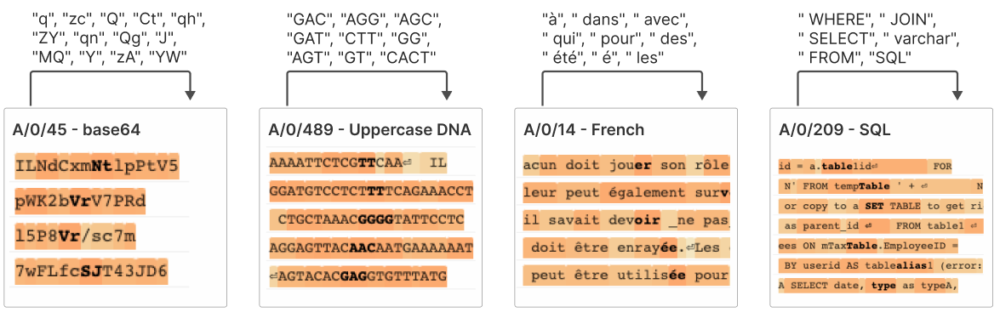
值得注意的是，这些例子来自 A/0，这是一次不过完备的字典学习运行（字典维度为 512，等于 transformer 的 MLP 维度）。当我们转向特征数量更多的运行时，中心特征会发生特征分裂，演变为更复杂的系统。
接下来我们看一个双节点系统，它用于生成“全大写蛇形命名法”（all caps snake case）的变量（例如 ARRAY_MAX_VALUE）。其中一个节点（A/0/207）在全大写文本词元上激活，另一个（A/0/358）在下划线词元上激活：

这类双节点系统在 Unicode 字符有时会被拆成两个词元的语言中相当常见。（同样地，随着特征进一步分裂，它们会扩展为更复杂的系统。）
例如，泰米尔文 Unicode 字符（U+0B80–U+0BFF 区段）通常会被拆成两个词元。比如字符“ண”（U+0BA3）会被分词为 \xe0\xae 后接 \xa3。第一部分（\xe0\xae 或 \xe0\xaf）大致指定了 Unicode 区段，第二部分则指定该区段内的具体字符。因此，模型很自然地会在两个特征之间交替：一个对应 Unicode 前缀词元，一个对应后缀词元。
更复杂的例子是中文。虽然许多常用汉字都有专属词元，但也有大量汉字被拆分。更复杂的是，汉字散布在多个 Unicode 区段中，这些区段很大，而且横跨许多按字节定义的逻辑块。要理解模型为处理这一情况而实现的状态机，关键观察在于：完整字符与拆分字符的“后缀”部分是相似的——两者后面既可以跟一个新的完整字符，也可以跟一个新的前缀。因此，我们观察到两个特征：其中一个在完整字符或后缀上触发（预测新的完整字符或前缀），另一个只在前缀上触发并预测后缀。
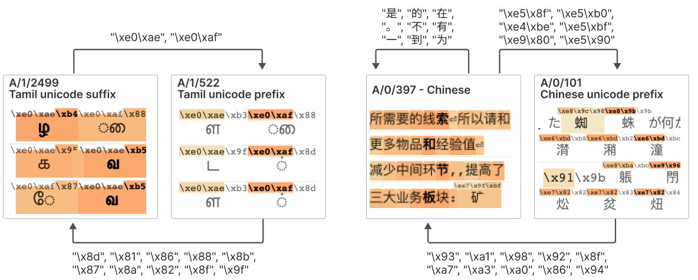
接下来我们看一个为 HTML 建模的非常简单的四节点系统。贯穿其中的“主路径”是：
该系统可能生成的典型样本大致是 <div>\n\t\t<span>。
完整的系统如下图所示：
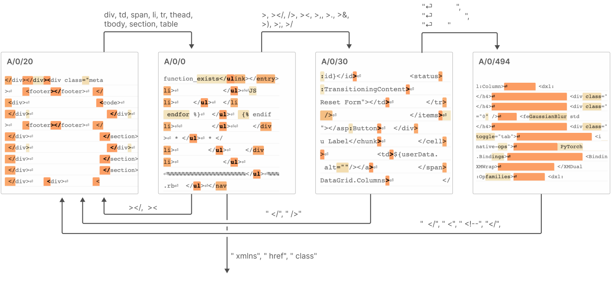
请记住，我们关注的是 A/0 的特征，在这个运行中该系统非常简单——如果我们去看 A/1，会发现复杂得多的东西！A/0 特征一个特别突出的缺点是：它们没有描述当 A/0/0 输出 href 这类词元（这会进入更复杂的状态）时会发生什么。
需要特别指出的是，这些特征可能相当依赖上下文。有几个与 IRC 聊天记录相关的特征，构成了一个完全不同的类有限状态自动机系统：

该系统可能生成的典型样本大致是 <nickonia_> lol ubuntu ;)。可以推测，Pile 数据集中关于 Linux 的 IRC 聊天记录占了很大比重。
一个特别有趣的行为是对特定短语的明显记忆。这只能在特征数量相对较多的运行（如 A/4）中观察到。在下面的例子中，一系列特征似乎在功能上记住了短语 MERCHANTABILITY or FITNESS FOR A PARTICULAR PURPOSE 的加粗部分。这是相当标准的法律用语，值得注意的是它出现在流行开源软件许可证的文件头中，这意味着模型在训练期间很可能多次见过它。
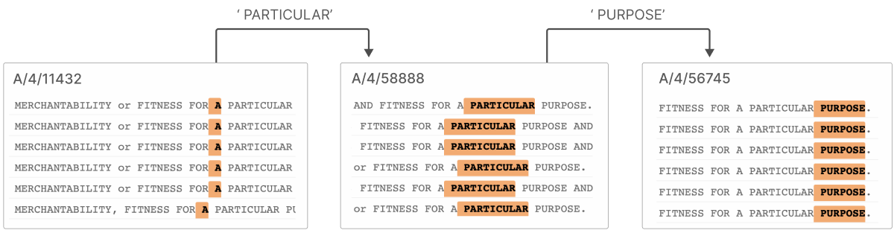
这似乎是我们在 Henighan 等人 \cite{henighan2023superposition} 中描述的关于记忆的机制理论的一个例证——我们观察到的这些特征看起来相对二元化，只对非常特定的情境作出响应。这也可以看作机制性异常检测 \cite{christiano2022anomaly} 的一个实例：模型在某个特定而狭窄的情境下表现得不同。在只有 512 个神经元的模型中竟能发现如此狭窄的东西，多少有些令人惊讶；从这个角度看，它是叠加能力的有趣例证——能把许多事物嵌入少量神经元中。另一方面，由于这些机制深埋在叠加之中，它们很可能噪声很大。
相关工作¶
叠加以及解决叠加的各种尝试，与众多研究脉络有着深刻的联系，包括对可解释特征的一般性研究、线性探针（linear probing）、压缩感知、字典学习与稀疏编码、神经编码理论、分布式表征、数学框架、向量符号架构，等等。我们无意在此对所有联系逐一展开，而是请读者参阅《Toy Models of Superposition》\cite{elhage2022superposition} 的相关工作章节（我们在那里深入讨论了这些主题），以及我们的文章 Distributed Representations: Composition & Superposition \cite{olah2023distributed}。这里，我们将把讨论集中在与解决叠加问题的尝试相关的文献，以及我们对叠加认识的较新进展上。
叠加¶
自我们发表《Toy Models of Superposition》以来，又有大量后续工作试图更好地理解叠加。下面简要总结。
叠加是真实存在的吗？Gurnee 等人 \cite{gurnee2023finding} 用稀疏线性探针展示了若干可能处于叠加状态的特征的令人信服的例子。另外，Li 等人 \cite{li2022emergent} 与 Nanda 等人 \cite{nanda2023emergent} 之间的一场交锋，似乎更新了“特征即方向”这一总体图景是否成立的问题；Li 等人似乎表明它并不成立，使这一假说陷入危机，随后由 Nanda 等人化解。
叠加何时发生、为何发生？Scherlis 等人 \cite{scherlis2022polysemanticity} 为思考单语义性与多语义性提供了一个数学框架。lsgos \cite{lsgos2023dropout} 探索了 dropout 对叠加玩具模型（toy model）的影响。
记忆化——在 Henighan 等人 \cite{henighan2023superposition} 的工作中，我们研究了与《Toy Models of Superposition》中相同的玩具模型，但这次是在有限大小数据集的大量重复上训练。我们发现，小数据集以叠加的方式被记忆，而大数据集则泛化出特征。Hobbhahn \cite{hobbhahn2023more} 复现了其中部分发现，并进一步展示了向其他设置的推广，包括层之间的瓶颈（类似于 MLP 层之间的残差流）。随后，在我们的一篇月度更新中，我们考察了记忆化与泛化两种机制之间的边界，发现了尖锐的相变，以及边界记忆化一侧数据集在叠加中的聚类现象。
解缠与架构方法¶
此外还有一批丰富且相关的解缠（disentanglement）文献，其目标是找到能把影响数据的概念上不同的现象分离（解缠）开来的数据表征。与叠加相反，这类工作通常寻求找到与所表征空间的维度数目相等的变异因子或特征数量，而叠加则寻求找到更多。
这通常被当作一个架构/训练期问题来处理。例如，Kim 和 Mnih \cite{kim2018disentangling} 提出了一种方法，通过鼓励各维度之间的独立性，推动变分自编码器（variational autoencoder）解缠各因子。类似地，Chen 等人 \cite{chen2016infogan} 开发了一种生成对抗网络（Generative Adversarial Network, GAN）方法，通过最大化一小部分因子与数据集之间的互信息来尝试解缠因子。Makhzani 和 Frey \cite{frey2014topk} 则使用 TopK 激活来鼓励稀疏性，从而实现解缠。关于其他此类方法的讨论，参见 Bengio 等人 \cite{bengio2013representation} 和 Räuker 等人 \cite{rauker2023toward}。
从这个角度看，一些针对叠加的架构方法也可以理解为解缠的尝试。例如，在 Elhage 等人 \cite{elhage2022solu} 的工作中，我们提出了 SoLU 激活函数，它通过鼓励特征与神经元基对齐，增加了 transformer 中可解释神经元的数量。遗憾的是，用 SoLU 激活函数训练的模型似乎会让一些神经元变得更可解释，代价是另一些神经元变得比以前更不可解释。
类似地，Jermyn 等人 \cite{jermyn2022engineering} 研究了在压缩感知任务上训练的 MLP 层，发现了多个损失相等（equal-loss）的极小值，其中一些强烈多语义，另一些强烈单语义。这表明训练干预可以把模型引向更单语义的极小值；不过，随后在更现实任务上的研究表明，损失相等这一性质是针对所选任务特有的。
这两个通过架构手段解决叠加问题的例子及其遇到的挑战，凸显了解缠问题与叠加问题之间的一个关键区别：解缠从根本上追求确保模型潜空间中的各维度彼此解缠，而叠加假说则认为这种解缠通常会损害性能（因为成功解缠将要求丢弃大量特征），并且模型对解缠干预的典型反应是让某些特征缠得更紧（Mahinpei 等人 \cite{mahinpei2021promises} 与 Elhage 等人 2022 \cite{elhage2022solu} 在略有不同的语境中都发现了这一点）。
字典学习与特征¶
我们的工作建立在一项更悠久的传统之上：用字典学习和稀疏自编码器（sparse autoencoder, SAE）来分解神经网络激活。
这一领域的早期工作集中于词嵌入（word embedding）和其他非 transformer 神经网络。Faruqui 等人 \cite{faruqui2015sparse} 与 Arora等人 \cite{arora2018linear} 都通过稀疏编码方法在词嵌入中发现了线性结构。Subramanian 等人 \cite{subramanian2018spine} 同样发现了词嵌入的线性因子，这次使用的是稀疏自编码器。Zhang 等人 \cite{zhang2019word} 用字典学习的方法解决了类似的问题，而 Panigrahi 等人 \cite{panigrahi2019word2sense} 则用潜在狄利克雷分配（Latent Dirichlet Allocation）来处理这一问题。
更近期，一些工作将字典学习方法应用于 transformer 模型。Yun 等人 \cite{yun2021transformer} 将字典学习应用于一个 12 层 transformer 的残差流，以寻找一个欠完备（undercomplete）的特征基。
在这一点上，我们在《Toy Models》\cite{elhage2022superposition} 中的工作主张将字典学习作为解决叠加问题的一种潜在途径。这促成了我们的同事 Cunningham 等人展开一项平行的研究，成果以一系列中期报告 \cite{sharkey2022interim,cunningham2023replication,huben2023update,smith2023found,smith2023strong,cunningham2023autointerpretation} 的形式发表，主题与本文非常相似，最终汇成一篇手稿 \cite{cunningham2023sparse}。看到我们双方的工作之间有如此多相互印证的发现，我们非常兴奋。
在他们的中期报告中，Sharkey 等人 \cite{sharkey2022interim} 使用稀疏自编码器对一个单层 transformer 进行字典学习，识别出一个庞大的（过完备的）特征基。（Sharkey 等人值得称赞：他们专注于字典学习、尤其是稀疏自编码器这一途径，而我们的研究当时只是把它作为并行探索的几种方法之一。）这项工作随后被 Cunningham 和 Smith \cite{cunningham2023replication} 以及 Huben \cite{huben2023update} 部分复现。接着，Smith \cite{smith2023found} 用自编码器在一个六层模型的一个 MLP 层中寻找特征。所得特征看起来是可解释的，例如能检测 LaTeX 方程语境中的“$”。在后续工作中，Smith 又将这一方法扩展到同一模型的残差流，识别出若干有趣的特征（见前文讨论）。在这些成果的基础上，Cunningham \cite{cunningham2023autointerpretation} 将 Bills 等人 \cite{bills2023language} 的自动可解释性（autointerpretability）技术应用于同一个六层模型的残差流和一个 MLP 层的特征，发现稀疏自编码器发现的特征比神经元可解释得多。
讨论¶
叠加的理论¶
开展这项工作之初，我们对叠加的理解主要来自《Toy Models》\cite{elhage2022superposition}。它给了我们一幅可以称为各向同性叠加模型（isotropic superposition model）的图景：特征是一些离散的一维对象，它们因干涉而相互排斥，形成一种大致均匀排布的特征方向组织。
这项工作使我们确信，我们之前的模型缺少了某个关键的东西。至少，特征似乎会聚集成密度更高的相关特征组。对此的一种解释（《Toy Models》曾简要考虑过）是，特征可能具有相关激活——即一起触发。另一种解释——我们怀疑它更为核心——是这些特征产生相似的作用。在 base64 中，对单个数字触发的特征与对其他字符触发的特征，预测的词元（token）集合大致相同，唯一的例外是其他数字；这种相似的下游效应表现为几何上相近的特征方向。
此外，特征是否必须是只编码某种强度的一维对象，也还不清楚。原则上，似乎可能存在更高维的“特征流形（feature manifold）”（参见前文此处的讨论）。
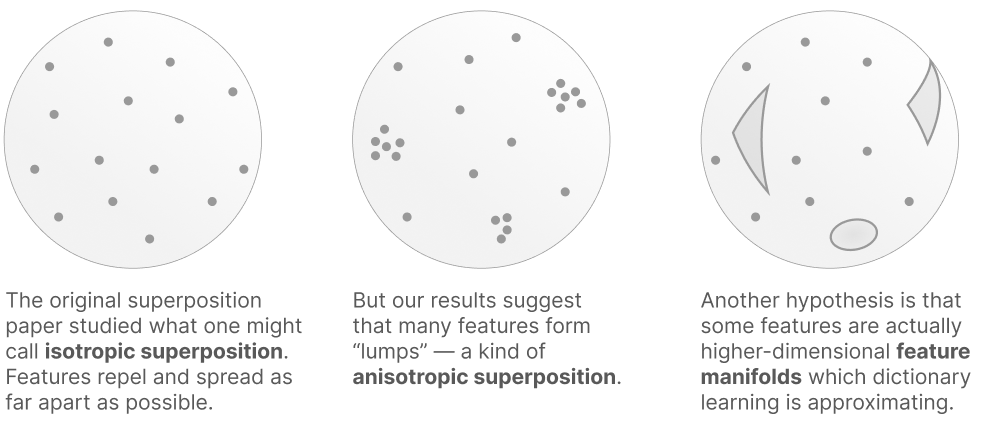
这些假说并不相互排斥。若干相关特征的凸包可以被理解为一种特征流形；另一方面，某些流形无法用有限个一维特征来唯一描述。（也许这解释了上文观察到的持续的特征分裂（feature splitting）现象。）
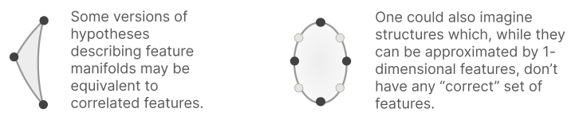
尽管如此，这些实验让我们更加确信，某种版本的叠加假说（以及线性表征假说（linear representation hypothesis））是成立的。所发现的可解释特征数量、激活水平似乎与“强度”或“置信度”相对应的方式、logit 权重大多说得通的事实，以及对“干涉权重”的观察——所有这些观察结果，都是叠加理论所预期的。
最后，我们注意到，在这些扩展后的叠加理论中，有些理论里寻找“正确的特征数量”可能并不是一个适定（well-posed）的问题；另一些理论里则存在真实的特征数量，但精确求到它并不那么要紧，因为我们会“优雅地失败（fail gracefully）”——随着自编码器学到的特征数量增加，我们会在不同粒度的分辨率下观察到“真实特征”。
“上下文中的词元”（token in context）特征真实存在吗？¶
我们找到的最常见的特征母题（motif）之一就是“上下文中的词元（token-in-context）”特征。随着字典规模增大而经由特征分裂涌现出的许多特征，也属于这一类。其中一些是直观的——借用 \cite{reif2019visualizing} 中的一个例子：把德语中的“die”（定冠词）与英语中的“die”（意为“死亡”或“骰子”）区分开来表示，是合理的。
但为什么我们会看到数百个不同的“the”特征（例如物理学中的“the”，区别于数学中的“the”）？我们在其他常见词（如“a”、“of”）以及句号之类的标点上，也观察到同样的现象。这些特征并不是我们着手研究单层模型时所预料的发现！
为了让这个问题更精确一些，借用局部表征与组合表征（local vs compositional representations）\cite{olah2023distributed,thorpe1989coding} 的语言和例子会很有帮助。把词元-上下文配对（如物理学中的“the”）逐一表示，从技术上讲是一种“局部编码”（local code）。更直观的表示方式则是一种“组合编码”（compositional code）——把“the”表示为一个独立于 Physics 的特征。因此，我们真正想问的是：为什么我们观察到的是局部编码？它是否真的反映了模型的实际机制？对此有两种假说：
- 底层的 transformer 使用的是组合编码，而我们字典学习方案的一个怪癖导致得到的特征呈现局部编码。
- 底层的 transformer 确实（至少部分地）在使用局部编码，而字典学习正确地反映了这一点。
如果前者成立，那么更好的字典学习方案或许能从同一个 transformer 中揭示出更具组合性的特征集。局部编码比组合编码更稀疏，我们的 L1 惩罚可能把模型推向了过度稀疏。
不过，我们认为第二种假说在某种程度上很可能是成立的。让我们再看物理学中“the”的例子——该特征预测物理学文本中的名词短语：如果模型把“the”与物理学语境分开表示，它的 logits（对数几率）就不得不成为“提升 the 之后出现的词元的权重”与“提升物理学中出现的词元的权重”之和。但模型可能希望预测比这更“尖锐”，而这只有用局部编码才能实现。
未来工作¶
稀疏自编码器的规模扩展。把稀疏自编码器的应用扩展到前沿模型（frontier model）上，在我们看来是今后最重要的问题之一。我们对这些方法或类似方法能够奏效相当乐观——Cunningham 等人的工作 \cite{cunningham2023sparse} 似乎表明这一方法可以在稍大的模型上奏效，我们也有指向同一方向的初步结果。不过，还有巨大的计算挑战需要克服。设想一个扩展因子为 100× 的自编码器，应用于宽度为 10,000 的单个 MLP 层的激活：它将拥有约 200 亿个参数。此外，这些特征中很多可能相当稀有，可能需要在大型模型训练语料的相当大一部分上训练自编码器。因此，训练自编码器很可能变得非常昂贵，甚至可能比原模型本身更贵。不过我们仍然乐观，而且还有一线希望——机制可解释性议程的很大一部分，似乎正日益取决于能否在一个困难的工程与规模扩展问题上取得成功，而前沿 AI 实验室在这方面拥有丰富的专长。
字典学习的规模法则。值得注意的是，上文讨论的字典学习和稀疏自编码器的规模扩展动态，存在巨大的不确定性。当我们把研究对象模型做得更大时，理想的扩展因子会如何变化？（它会保持不变吗？）所需的数据量会如何变化？这些问题的答案将决定这一方法（如果执行得当）能否扩展到前沿模型。理想情况下，我们希望拥有能够回答这些问题的规模法则（scaling laws）\cite{kaplan2020scaling}。
如何识别好的特征？这项工作最大的挑战之一在于，我们在某种程度上是“在黑暗中摸索”。我们还没有一套良好的、系统的方法来确认自己是否成功提取出了高质量的特征。自动可解释性 \cite{bills2023language} 似乎是解决这一问题的最有力候选。另一种思路是寄希望于某种纯抽象的定义（例如基于信息的度量提议），但我们在真实数据上尚未看到它展现出令人信服的活力。此外，出于评估一致性与普遍性的目的，除 MMCS、激活相似度和归因相似度之外，拥有更多用于比较特征集的度量也会很有帮助。
分析的可扩展性。假设稀疏自编码器彻底解决了叠加问题，我们是否就能一举实现对模型的完整机制理解？显然，至少还存在另一道根本性的障碍：对模型的规模化分析（scaling analysis）——我们需要把微观层面的洞见转化为更宏观的理解。这里的一种可行方案依然是自动化可解释性。但把对 AI 的理解委托给 AI，出于种种原因可能并不能令人完全满意。也许还存在其他路径，例如基于发现更大尺度的结构（参见此处的讨论）。
稀疏自编码器的算法改进。改进稀疏自编码器方法的新算法可能很有用。例如，可以探索使用变分自编码器（variational autoencoder，参见 \cite{Barello2018SparseCodingVA}），或使用在简单激活值 L1 惩罚之外的促进稀疏性的先验正则化技术（例如 \cite{miao2021incorporating,rentzeperis2023beyond}），比如鼓励不同层学得特征之间的交互具有稀疏性。更早的研究表明，噪声注入也能在 L1 惩罚之外独立地提高神经元的可解释性 \cite{sharkey2022interim}\cite{bricken2023emergence}。
注意力叠加？支持 MLP 层中存在叠加的许多动机 \cite{elhage2022superposition} 同样适用于自注意力层。可以设想，类似的方法或许也能从注意力层中提取出有用的结构，尽管目前尚未确立一个清晰的例子（例如，参见我们的五月与七月更新）。如果确实如此，解决这一问题可能会成为机制可解释性议程未来的瓶颈。
叠加与特征的理论。即使叠加假说在某种非常宽泛的意义上成立，我们对叠加的理解仍有许多根本性的问题悬而未决。例如，如上文所述，本文的工作提示了叠加假说的若干扩展方向，涵盖具有相似效应的特征簇，或连续的特征族。我们相信，进一步探索叠加理论仍有重要的工作要做，或许可以借助玩具模型来完成。
评论与复现¶
受最初的 Circuits Thread 与 Distill 的"讨论文章"实验 的启发，作者邀请了数位此前与之讨论过初步结果的外部研究者对本文发表评论。以下收录了他们的评论。
复现与教程¶
Neel Nanda 是一位外部机制可解释性研究者。以下是对一篇博客文章的摘要，该文章复现并扩展了本文，并附有配套教程，用于加载若干训练好的自编码器并练习解释特征。
本文的核心结果似乎可以复现。我在一个开源的一层 GELU 语言模型的 MLP 层上训练了稀疏自编码器，潜空间特征中有相当一部分是可解释的。
我开源了两个训练好的自编码器，以及一份关于如何使用它们、以及如何解释特征的教程。我还开源了一个（非常！）粗糙的训练代码库，以及一些在训练中出现的实现细节和训练你自己的模型的建议。
我考察了解码器权重在神经元基下的稀疏程度，发现它们高度分散：4% 可由单个神经元很好地解释，4% 可由 2 到 10 个神经元很好地解释，其余 92% 是稠密的。我觉得这相当令人惊讶！尽管如此，峰度（kurtosis）显示神经元基依然是特权基。
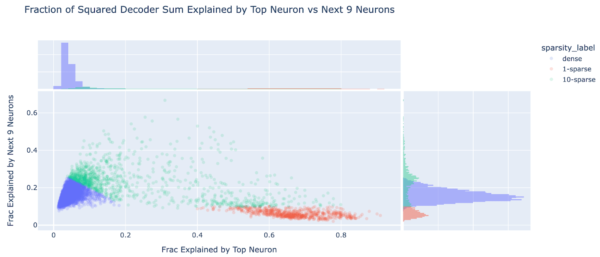
我还展示了一些案例研究，介绍我发现的若干特征，例如一个标题大小写特征和一个 "and I" 特征。
我没有发现任何死特征，但超过一半的特征形成了一个超低频簇（频率低于 1e-4）。令人惊讶的是，我发现这个簇几乎全是同一个特征（就编码器权重而言，但就解码器权重而言并非如此）。在某个输入上，这些极稀有特征中有 95% 都触发了！
- 不同的随机种子会形成相同的方向，这表明它是模型的真实属性，而不仅仅是自编码器的产物
- 我未能解释清楚这个共享方向究竟是什么
- 我试图通过训练一个与该方向正交的自编码器来解决这个问题，但它仍然形成了一个超低频簇（这次全部聚集在一个新的方向上）
这项工作提出的一个问题是：编码器和解码器是否应该绑定（tied）。我通过实验发现，每个特征的解码器权重与编码器权重存在中等程度的差异，中位余弦相似度仅为 0.5，这为"两者各司其职、不应绑定"提供了经验证据。从概念上讲，编码器和解码器确实在做不同的事情：编码器负责检测——找到用于检测特征的最优投影方向，并尽量减少与其他相似特征的干涉；而解码器负责表示特征，它试图逼近特征的"真实"方向，而不顾及任何干涉。
脚注¶
- 这些输出权重可能小到乘以激活值后，对模型的输出没有明显的影响。
- 特征可能只会在其他特征使这些词元变得极不可能出现的情形下激活，从而该特征实际上几乎没有什么影响。
- 我们对层归一化的线性化近似（见 Framework \cite{nelhage2021mathematical}）可能不佳。
后续分析证实了 logit 权重的影响，因此我们认为这些问题在实践中不会出现。
参考文献¶
- [olah2017feature]: Olah, Chris, Mordvintsev, Alexander, Schubert, Ludwig, “Feature Visualization”, Distill, 2017
- [arora2018linear]: Arora, Sanjeev, Li, Yuanzhi, Liang, Yingyu, Ma, Tengyu, Risteski, Andrej, “Linear algebraic structure of word senses, with applications to polysemy”, Transactions of the Association for Computational Linguistics, 2018
- [goh2016decoding]: Gabriel Goh, “Decoding The Thought Vector”, 2016
- [olah2020zoom]: Olah, Chris, Cammarata, Nick, Schubert, Ludwig, Goh, Gabriel, Petrov, Michael, Carter, Shan, “Zoom In: An Introduction to Circuits”, Distill, 2020
- [elhage2022superposition]: Elhage, Nelson, Hume, Tristan, Olsson, Catherine, Schiefer, Nicholas, Henighan, Tom, Kravec, Shauna, Hatfield-Dodds, Zac, Lasenby, Robert, Drain, Dawn, Chen, Carol, Grosse, Roger, McCandlish, Sam, Kaplan, Jared, Amodei, Dario, Wattenberg, Martin, Olah, Christopher, “Toy Models of Superposition”, Transformer Circuits Thread, 2022
- [faruqui2015sparse]: Faruqui, Manaal, Tsvetkov, Yulia, Yogatama, Dani, Dyer, Chris, Smith, Noah, “Sparse overcomplete word vector representations”, arXiv preprint arXiv:1506.02004
- [subramanian2018spine]: Subramanian, Anant, Pruthi, Danish, Jhamtani, Harsh, Berg-Kirkpatrick, Taylor, Hovy, Eduard, “Spine: Sparse interpretable neural embeddings”, Proceedings of the AAAI Conference on Artificial Intelligence
- [zhang2019word]: Zhang, Juexiao, Chen, Yubei, Cheung, Brian, Olshausen, Bruno A, “Word embedding visualization via dictionary learning”, arXiv preprint arXiv:1910.03833
- [panigrahi2019word2sense]: Panigrahi, Abhishek, Simhadri, Harsha Vardhan, Bhattacharyya, Chiranjib, “Word2Sense: sparse interpretable word embeddings”, Proceedings of the 57th Annual Meeting of the Association for Computational Linguistics
- [yun2021transformer]: Yun, Zeyu, Chen, Yubei, Olshausen, Bruno A, LeCun, Yann, “Transformer visualization via dictionary learning: contextualized embedding as a linear superposition of transformer factors”, arXiv preprint arXiv:2103.15949
- [sharkey2022interim]: Lee Sharkey, Dan Braun, Beren Millidge, “[Interim research report] Taking features out of superposition with sparse autoencoders”, 2022
- [cunningham2023replication]: Cunningham, Hoagy, Smith, Logan, “[Replication] Conjecture's Sparse Coding in Toy Models”, 2023
- [huben2023update]: Huben, Robert, “[Research Update] Sparse Autoencoder features are bimodal”, 2023
- [smith2023found]: Smith, Logan, “(tentatively) Found 600+ Monosemantic Features in a Small LM Using Sparse Autoencoders”, 2023
- [smith2023strong]: Smith, Logan, “Really Strong Features Found in Residual Stream”, 2023
- [cunningham2023autointerpretation]: Cunningham, Hoagy, “AutoInterpretation Finds Sparse Coding Beats Alternatives”, 2023
- [cunningham2023sparse]: Cunningham, Hoagy, Ewart, Aidan, Smith, Logan, Huben, Robert, Sharkey, Lee, “Sparse Autoencoders Find Highly Interpretable Model Directions”, arXiv preprint arXiv:2309.08600
- [nelhage2021mathematical]: Elhage, Nelson, Nanda, Neel, Olsson, Catherine, Henighan, Tom, Joseph, Nicholas, Mann, Ben, Askell, Amanda, Bai, Yuntao, Chen, Anna, Conerly, Tom, DasSarma, Nova, Drain, Dawn, Ganguli, Deep, Hatfield-Dodds, Zac, Hernandez, Danny, Jones, Andy, Kernion, Jackson, Lovitt, Liane, Ndousse, Kamal, Amodei, Dario, Brown, Tom, Clark, Jack, Kaplan, Jared, McCandlish, Sam, Olah, Chris, “A Mathematical Framework for Transformer Circuits”, Transformer Circuits Thread, 2021
- [gao2020pile]: Leo Gao, Stella Biderman, Sid Black, Laurence Golding, Travis Hoppe, Charles Foster, Jason Phang, Horace He, Anish Thite, Noa Nabeshima, Shawn Presser, Connor Leahy, “The Pile: An 800GB Dataset of Diverse Text for Language Modeling”, 2020
- [mikolov2013linguistic]: Mikolov, Tom{\'a}{\v{s}}, Yih, Wen-tau, Zweig, Geoffrey, “Linguistic regularities in continuous space word representations”, Proceedings of the 2013 conference of the north american chapter of the association for computational linguistics: Human language technologies, 2013
- [levy2014linguistic]: Levy, Omer, Goldberg, Yoav, “Linguistic regularities in sparse and explicit word representations”, Proceedings of the eighteenth conference on computational natural language learning
- [radford2015unsupervised]: Radford, Alec, Metz, Luke, Chintala, Soumith, “Unsupervised representation learning with deep convolutional generative adversarial networks”, arXiv preprint arXiv:1511.06434
- [karpathy2015visualizing]: Karpathy, Andrej, Johnson, Justin, Fei-Fei, Li, “Visualizing and understanding recurrent networks”, arXiv preprint arXiv:1506.02078
- [radford2017learning]: Radford, Alec, Jozefowicz, Rafal, Sutskever, Ilya, “Learning to generate reviews and discovering sentiment”, arXiv preprint arXiv:1704.01444
- [cammarata2020curve]: Cammarata, Nick, Goh, Gabriel, Carter, Shan, Schubert, Ludwig, Petrov, Michael, Olah, Chris, “Curve Detectors”, Distill, 2020
- [zhou2014object]: Zhou, Bolei, Khosla, Aditya, Lapedriza, Agata, Oliva, Aude, Torralba, Antonio, “Object detectors emerge in deep scene cnns”, arXiv preprint arXiv:1412.6856
- [netdissect2017]: Bau, David, Zhou, Bolei, Khosla, Aditya, Oliva, Aude, Torralba, Antonio, “Network Dissection: Quantifying Interpretability of Deep Visual Representations”, Computer Vision and Pattern Recognition
- [bau2020understanding]: Bau, David, Zhu, Jun-Yan, Strobelt, Hendrik, Lapedriza, Agata, Zhou, Bolei, Torralba, Antonio, “Understanding the role of individual units in a deep neural network”, Proceedings of the National Academy of Sciences, 2020
- [morcos2018importance]: Morcos, Ari S, Barrett, David GT, Rabinowitz, Neil C, Botvinick, Matthew, “On the importance of single directions for generalization”, arXiv preprint arXiv:1803.06959
- [donnelly2019interpretability]: Donnelly, Jonathan, Roegiest, Adam, “On Interpretability and Feature Representations: An Analysis of the Sentiment Neuron”, European Conference on Information Retrieval, 2019
- [nanda2023emergent]: Nanda, Neel, Lee, Andrew, Wattenberg, Martin, “Emergent Linear Representations in World Models of Self-Supervised Sequence Models”, arXiv preprint arXiv:2309.00941
- [burns2022discovering]: Burns, Collin, Ye, Haotian, Klein, Dan, Steinhardt, Jacob, “Discovering latent knowledge in language models without supervision”, arXiv preprint arXiv:2212.03827
- [mcgrath2022acquisition]: McGrath, Thomas, Kapishnikov, Andrei, Toma{\v{s}}ev, Nenad, Pearce, Adam, Wattenberg, Martin, Hassabis, Demis, Kim, Been, Paquet, Ulrich, Kramnik, Vladimir, “Acquisition of chess knowledge in alphazero”, Proceedings of the National Academy of Sciences, 2022
- [li2022emergent]: Li, Kenneth, Hopkins, Aspen K, Bau, David, Viégas, Fernanda, Pfister, Hanspeter, Wattenberg, Martin, “Emergent world representations: Exploring a sequence model trained on a synthetic task”, arXiv preprint arXiv:2210.13382
- [jermyn2022engineering]: Jermyn, Adam S, Schiefer, Nicholas, Hubinger, Evan, “Engineering monosemanticity in toy models”, arXiv preprint arXiv:2211.09169
- [scherlis2022polysemanticity]: Scherlis, Adam, Sachan, Kshitij, Jermyn, Adam S, Benton, Joe, Shlegeris, Buck, “Polysemanticity and capacity in neural networks”, arXiv preprint arXiv:2210.01892
- [olshausen1997sparse]: Olshausen, Bruno A, Field, David J, “Sparse coding with an overcomplete basis set: A strategy employed by V1?”, Vision research, 1997
- [elhage2022solu]: Elhage, Nelson, Hume, Tristan, Olsson, Catherine, Nanda, Neel, Henighan, Tom, Johnston, Scott, ElShowk, Sheer, Joseph, Nicholas, DasSarma, Nova, Mann, Ben, Hernandez, Danny, Askell, Amanda, Ndousse, Kamal, Jones, And, Drain, Dawn, Chen, Anna, Bai, Yuntao, Ganguli, Deep, Lovitt, Liane, Hatfield-Dodds, Zac, Kernion, Jackson, Conerly, Tom, Kravec, Shauna, Fort, Stanislav, Kadavath, Saurav, Jacobson, Josh, Tran-Johnson, Eli, Kaplan, Jared, Clark, Jack, Brown, Tom, McCandlish, Sam, Amodei, Dario, Olah, Christopher, “Softmax Linear Units”, Transformer Circuits Thread, 2022
- [elad2010sparse]: Elad, Michael, “Sparse and redundant representations: from theory to applications in signal and image processing”, 2010
- [engan1999method]: Engan, Kjersti, Aase, Sven Ole, Husoy, J Hakon, “Method of optimal directions for frame design”, 1999 IEEE International Conference on Acoustics, Speech, and Signal Processing. Proceedings. ICASSP99 (Cat. No. 99CH36258), 1999
- [aharon2006k]: Aharon, Michal, Elad, Michael, Bruckstein, Alfred, “K-SVD: An algorithm for designing overcomplete dictionaries for sparse representation”, IEEE Transactions on signal processing, 2006
- [nanda2023patching]: Nanda, Neel, “Attribution Patching: Activation Patching At Industrial Scale”, 2023
- [rumbelow2023solid]: Rumbelow, Jessica, Watkins, Matthew, “SolidGoldMagikarp (plus, prompt generation)”, 2023
- [olah2023distributed]: Olah, Christopher, “Distributed Representations: Composition & Superposition”, 2023
- [bills2023language]: Bills, Steven, Cammarata, Nick, Mossing, Dan, Tillman, Henk, Gao, Leo, Goh, Gabriel, Sutskever, Ilya, Leike, Jan, Wu, Jeff, Saunders, William, “Language models can explain neurons in language models”, 2023
- [hernandez2021natural]: Hernandez, Evan, Schwettmann, Sarah, Bau, David, Bagashvili, Teona, Torralba, Antonio, Andreas, Jacob, “Natural language descriptions of deep visual features”, International Conference on Learning Representations
- [olah2020early]: Olah, Chris, Cammarata, Nick, Schubert, Ludwig, Goh, Gabriel, Petrov, Michael, Carter, Shan, “An Overview of Early Vision in InceptionV1”, Distill, 2020
- [goh2021multimodal]: Goh, Gabriel, Cammarata, Nick, Voss, Chelsea, Carter, Shan, Petrov, Michael, Schubert, Ludwig, Radford, Alec, Olah, Chris, “Multimodal Neurons in Artificial Neural Networks”, Distill, 2021
- [gurnee2023finding]: Gurnee, Wes, Nanda, Neel, Pauly, Matthew, Harvey, Katherine, Troitskii, Dmitrii, Bertsimas, Dimitris, “Finding Neurons in a Haystack: Case Studies with Sparse Probing”, arXiv preprint arXiv:2305.01610
- [reif2019visualizing]: Coenen, Andy, Reif, Emily, Yuan, Ann, Kim, Been, Pearce, Adam, Viégas, Fernanda, Wattenberg, Martin, “Visualizing and measuring the geometry of BERT”, Advances in Neural Information Processing Systems
- [geva2022transformer]: Geva, Mor, Caciularu, Avi, Wang, Kevin Ro, Goldberg, Yoav, “Transformer Feed-Forward Layers Build Predictions by Promoting Concepts in the Vocabulary Space”, arXiv preprint arXiv:2203.14680
- [schubert2021highlow]: Schubert, Ludwig, Voss, Chelsea, Cammarata, Nick, Goh, Gabriel, Olah, Chris, “High-Low Frequency Detectors”, Distill, 2021
- [li2015convergent]: Li, Yixuan, Yosinski, Jason, Clune, Jeff, Lipson, Hod, Hopcroft, John E, others, “Convergent learning: Do different neural networks learn the same representations?”, FE@ NIPS
- [erhan2010does]: Erhan, Dumitru, Courville, Aaron, Bengio, Yoshua, Vincent, Pascal, “Why does unsupervised pre-training help deep learning?”, Proceedings of the thirteenth international conference on artificial intelligence and statistics, 2010
- [olah2015visualizing]: Olah, Chris, “Visualizing Representations: Deep Learning and Human Beings”, 2015
- [raghu2017svcca]: Raghu, Maithra, Gilmer, Justin, Yosinski, Jason, Sohl-Dickstein, Jascha, “SVCCA: Singular Vector Canonical Correlation Analysis for Deep Learning Dynamics and Interpretability”, Advances in Neural Information Processing Systems 30, 2017
- [henighan2023superposition]: Henighan, Tom AND Carter, Shan AND Hume, Tristan AND Elhage, Nelson AND Lasenby, Robert AND Fort, Stanislav AND Schiefer, Nicholas AND Olah, Christopher, “Superposition, Memorization, and Double Descent”, Transformer Circuits Thread, 2023
- [christiano2022anomaly]: Christiano, Paul, “Mechanistic anomaly detection and ELK”, 2022
- [lsgos2023dropout]: lsgos, “Dropout can create a privileged basis in the ReLU output model”, 2023
- [hobbhahn2023more]: Hobbhahn, Marius, “More findings on Memorization and double descent”, 2023
- [kim2018disentangling]: Kim, Hyunjik, Mnih, Andriy, “Disentangling by factorising”, International Conference on Machine Learning, 2018
- [chen2016infogan]: Chen, Xi, Duan, Yan, Houthooft, Rein, Schulman, John, Sutskever, Ilya, Abbeel, Pieter, “Infogan: Interpretable representation learning by information maximizing generative adversarial nets”, Advances in neural information processing systems
- [frey2014topk]: Alireza Makhzani, Brendan J. Frey, “k-Sparse Autoencoders”, CoRR, 2013
- [bengio2013representation]: Bengio, Yoshua, Courville, Aaron, Vincent, Pascal, “Representation learning: A review and new perspectives”, IEEE transactions on pattern analysis and machine intelligence, 2013
- [rauker2023toward]: Räuker, Tilman, Ho, Anson, Casper, Stephen, Hadfield-Menell, Dylan, “Toward transparent ai: A survey on interpreting the inner structures of deep neural networks”, 2023 IEEE Conference on Secure and Trustworthy Machine Learning (SaTML), 2023
- [mahinpei2021promises]: Mahinpei, Anita, Clark, Justin, Lage, Isaac, Doshi-Velez, Finale, Pan, Weiwei, “Promises and pitfalls of black-box concept learning models”, arXiv preprint arXiv:2106.13314
- [thorpe1989coding]: Thorpe, Simon J., “Local vs. Distributed Coding”, Intellectica, 1989
- [kaplan2020scaling]: Kaplan, Jared, McCandlish, Sam, Henighan, Tom, Brown, Tom B, Chess, Benjamin, Child, Rewon, Gray, Scott, Radford, Alec, Wu, Jeffrey, Amodei, Dario, “Scaling laws for neural language models”, arXiv preprint arXiv:2001.08361
- [Barello2018SparseCodingVA]: G. Barello, Adam S. Charles, Jonathan W. Pillow, “Sparse-Coding Variational Auto-Encoders”, bioRxiv
- [miao2021incorporating]: Miao, Ning, Mathieu, Emile, Siddharth, N, Teh, Yee Whye, Rainforth, Tom, “On incorporating inductive biases into VAEs”, arXiv preprint arXiv:2106.13746
- [rentzeperis2023beyond]: Rentzeperis, Ilias, Calatroni, Luca, Perrinet, Laurent, Prandi, Dario, “Beyond ℓ₁ sparse coding in V1”, arXiv preprint arXiv:2301.10002
- [bricken2023emergence]: Bricken, Trenton, Schaeffer, Rylan, Olshausen, Bruno, Kreiman, Gabriel, “Emergence of Sparse Representations from Noise”
-
关于这一点的更多讨论，见 Distributed Representations: Composition and Superposition。 ↩
-
我们特别想指出 Li 等人 \cite{li2022emergent} 与 Nanda 等人 \cite{nanda2023emergent} 之间一次精彩的交锋：Li 等人发现了一个看似反例的情形，其中特征并非以方向的形式表示；随后 Nanda 找到了另一种诠释，认为特征就是方向，从而化解了这一反例。 ↩
-
虽然这不是本文的重点，但我们同样可以设想用这种方式分解模型潜在状态或激活值的其他部分。例如，我们可以把这种分解应用于残差流（参见 \cite{yun2021transformer,smith2023strong}），或应用于注意力头的键与查询，或应用于它们的输出。 ↩
-
这一性质与 Cammarata 等人 \cite{cammarata2020curve} 讨论的因果性（Causality）、普遍性（Generality）与纯粹性（Purity）三项诉求密切相关，他们提供了一个在具体实例中使该性质得以落实的例子。 ↩
-
这在精神上与影响函数（influence functions）所提供的证据类似。 ↩
-
对于本文讨论的模型，我们在 80 亿个数据点上训练了自编码器。 ↩
-
我们绑定了输入与输出处施加的偏置，因此结果等价于：先从所有激活值中减去一个固定偏置，再使用一个仅在编码器激活函数前设有偏置的自编码器。 ↩
-
注意，使用 MSE 损失可以避开我们在上文"为什么不用架构方法？"（Why Not Architectural Approaches?）中讨论过的多语义性难题。 ↩
-
注意，这种线性结构使得特征更可能是线性的。一方面，这意味着线性表征假说（linear representation hypothesis）更有可能在这一模型上成立；另一方面，它也可能意味着我们的结果更不容易推广到多层模型。幸运的是，已有其他研究者用稀疏自编码器研究过多层 transformer，并发现了可解释的线性特征，这让我们更有信心相信在单层模型中观察到的东西确实能够推广 \cite{smith2023found,smith2023strong,cunningham2023autointerpretation}。 ↩
-
例如，我们 transformer 模型中的一个神经元会对学术引文、英语对话、HTTP 请求和韩语文本的混合物作出响应。在视觉模型中，有一个经典的神经元例子，它同时响应猫脸和汽车前脸 \cite{olah2017feature}。 ↩
-
这种拆分式词元化（split tokenization）在拉丁文字之外的 Unicode 字符以及来自其他 Unicode 块的最常见字符中相当普遍。 ↩
-
例如，在上图中有一个换行符 ⏎，我们的特征会在它上面触发，但我们的代理却给它打了低分，因为它位于该 Unicode 块之外。 ↩
-
我们为什么相信大的激活值会产生更大的影响？对于本文所考察的这种单层 transformer，我们可以给出有力的论证：特征对 logits 的影响是线性的（不计层归一化引起的重缩放），因此特征激活值越大，对 logits 的影响就越大。对于更大的模型，这一点依赖于许多猜想和启发式论证（例如模型中存在大量线性通路，以及每一层都有线性特征的想法），并且由连续性可知，它对足够小的激活值必然成立，但目前还没有无懈可击的论证。 ↩
-
（也称为"logit 归因（logit attribution）"，参见类似工作，例如 \cite{nanda2023patching}） ↩
-
我们排除了对应极稀有或从未使用过的词表元素的权重。这些元素或许类似于 Rumbelow 与 Watkins \cite{rumbelow2023solid} 所说的"异常词元（anomalous tokens）"（例如 "SolidGoldMagikarp"）。 ↩
-
理论上，logit 权重可能在几种情况下高估模型对特征的实际使用： ↩
-
当然，有些特征可能确实与神经元对齐。但我们希望确认，字典学习发现的特征中至少有一部分并非平凡。 ↩
-
我们还尝试考察对特征字典向量贡献最大的神经元。不过我们发现，考察相关性最高的神经元更为可靠——在早期的实验中，我们遇到过少数情况：相关方法找到了一个看似相似的神经元，而字典方法却没有。这可能是因为神经元的激活值尺度各不相同。 ↩
-
作为叠加策略，这很有道理：既然语言在本质上相互排斥，它们自然适合彼此叠加在一起 \cite{olah2023distributed}。 ↩
-
"激活相关性"定义为：在 40,960,000 个词元上的激活值与 A/1/3450 的激活值皮尔逊相关性最高的那个特征。 ↩
-
为了在整个特征激活值谱上均匀采样，我们把激活值谱划分为 11 个"激活区间"，它们均匀分布在 0 激活值与最大激活值之间，然后从这些区间中均匀采样。 ↩
-
有必要明确指出：我们的自动化可解释性设置经过专门设计，确保除了解释文本之外，不存在任何关于激活模式的信息泄漏。例如，在预测新的激活值时，模型看不到该特征任何真实的激活值。 ↩
-
这与 Bills 等人的评估策略不同：他们在激活值最大的数据集示例与随机样本的混合体上计算预测激活值与真实激活值的相关性。对于在大多数随机样本上都不触发的稀疏特征而言，这实际上是在检验模型能否把特征的大激活值与零区分开来。 ↩
-
在 Claude 预测出恒定分数（多数情况下全为 0）的实例中，相关性无法计算，我们便赋给其零分，这正是图中那里出现上升的原因。 ↩
-
关于它（指激活值）对模型输出的影响，可参见"阿拉伯文字特征的激活值特异性分析"（Arabic Feature's Activations Specificity Analysis）中的激活期望值图。 ↩
-
粗略地说，模拟一个含 10 万（100k）个特征的层，其开销会是采样 Claude 2 或 GPT-4 这样的大语言模型的 10 万倍（我们需要在每个词元上为每个特征采样一次用于解释的大模型）。按当前价格计算，在单个 4096 词元的上下文上模拟 100k 个特征，费用约为 12,500–25,000 美元，而人们大概需要在许多上下文上做评估。 ↩
-
我们通过随机打乱 Run A 所用已训练 transformer 每个权重矩阵的元素，来生成一个具有随机权重的模型。这保证了单个权重的分布保持一致，因此差异只能源于结构。 ↩
-
从纯理论的角度看，注意力头大体上可以实现"三点函数"（两个输入、一个输出）。而 MLP 层则很适合实现 N 词元合取（N-token conjunctions），其中最极端的或许是上下文特征或上下文中的词元特征（token-in-context features）。因此，我们看到大量这样的特征或许是很自然的。 ↩
-
上下文中的词元特征可能为简化模型分析提供重要契机——正如 Elhage 等人 \cite{elhage2022solu} 所指出的，这些特征或许可以理解为一个由上下文和词元参数化的二维特征族。 ↩
-
Toy Models 研究过相关特征（特别参见相关特征的组织与相关特征的坍缩），但只考虑了在"是否激活"上相关的特征（而不包括激活时的取值），并且没有任何与这里描述的类似"输出动作"相对应的东西。尽管如此，Toy Models 的实验仍可能是有用的直觉泵（intuition pump），尤其是在区分"叠加中彼此相似的特征"与"坍缩为单个更宽泛特征的特征"这两种情形时。 ↩
-
对于每一对特征，我们在其中一个特征触发的词元子集上计算二者激活值的余弦相似度；然后换用另一个特征触发的子集重复这一计算，并取两者中的较大值。如果该度量超过约 0.4，我们就在这两个特征之间建立一条连线。选择这一阈值是为了在"图足够小、便于可视化"与"仍能展现特征分裂的丰富性"之间取得平衡。我们从这一分析中省略了超低密度特征。 ↩
-
这些特征会在 " P" 词元上触发——即以它为第一个词元的单词中的该词元，例如
[ P][attern]。 ↩ -
在这一实例中，我们是通过人工检查而非余弦相似度来找到精化后的
P特征的。 ↩ -
我们最初怀疑 A/1/1544 这个特征可能在编码了 ASCII 文本的 base64 字符串上激活，最初的线索来自 token
ICAgICAg——该特征对它响应尤其强烈，而它对应的正是连续六个空格。 ↩ -
判断一个数据集样本何时编码了 ASCII 文本有些微妙：由于四个 base64 字符编码三个 ASCII 字符，base64 只能以四个字符为一组解码成 ASCII。因此，我们选取这样的子串：用 Python 的 base64 库解码后，其中包含的可打印 ASCII 字符数量最多。 ↩
-
普遍性在何种意义上说明特征是"真实"的？一个基本的观察是：它表明我们发现的特征不只是字典学习过程的产物——至少，如果它们确实来自字典学习过程，那也是以某种一致的方式产生的。但它还有几层更深的启示。它意味着，无论特征的来源是什么，我们都可以把特征当作可复现、可靠、反复出现的分析单元来谈论。此外，这本身也是一个令人惊讶的观察——如果叠加假说的强版本成立，即模型确实以叠加方式表示某个有限的、离散的特征集合，那么我们正会预期看到这种现象。 ↩
-
事实上，我们发现有些特征如此普遍，以至于我们开始把它的存在当作评估字典学习实验工作流中的一项基本工具而习以为常。例如，base64 特征——我们之前在 SoLU 模型（Softmax 线性单元）中观察到过——始终如一地普遍存在，以至于它的出现成了一条有用的调试启发式线索。 ↩
-
该特征是双峰的（bimodal），在较大的那个峰上是单语义的，并且只在 0.02% 的词元上激活。这意味着 Pile 数据集中每 10,000 个词元里至少有一个是参考文献中 PLoS 期刊的缩写！这是一个例子，说明检查特征可以揭示数据集的属性——在这里，暴露出的正是 Pile 对科学内容的强烈偏向。 ↩
-
假设特征 \(f_i\) 在 \(k \in \{1,\ldots,n_{\text{vocab}}\}\) 上有 logit 权重 \(v_{ik}\)。在给定的词元 \(t_j\) 处，我们计算该特征的激活值 \(f_i(t_j)\)，再乘以下一个词元 \(t_{j+1}\) 的 logit 权重 \(v_{it_{j+1}}\)，得到归因分数 \(f_i(t_j)v_{it_{j+1}}\)。归因向量由随机抽样数据点上的归因分数堆叠而成。这近似于"梯度乘以激活值"的经典归因方法，区别在于我们忽略了 softmax 和层归一化中的分母。 ↩
-
这些类"有限状态自动机"的特征组合与电路还有一点不同：模型并不是为了让它们协同工作才学习到它们的。恰恰相反，在自回归建模文本的学习过程中，由于真实数据集中存在的模式，模型学到了经由词元流相互作用的特征。相比之下，用强化学习训练的语言模型可能会有这样的系统——其特征组件通过生成的词元相互作用——这些系统在 RL 训练过程中共同演化，并逐渐适应彼此协同工作。 ↩